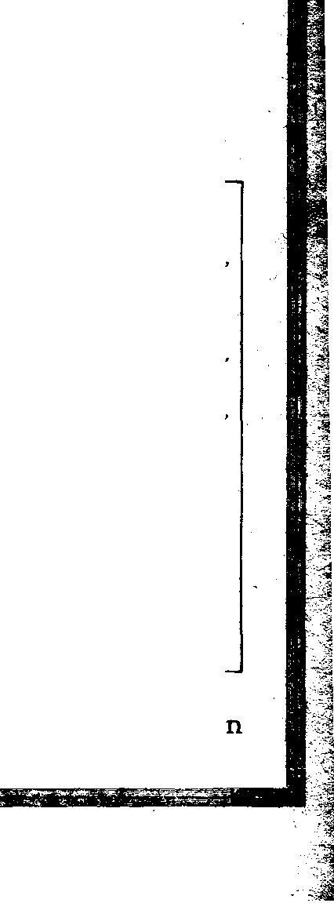

Social and Educational
The Reading of Fiction.........
726
727
Real Author is Invisible.........
Political—Domestic and Foreign
Poland, Child of the Battlefield (Part 1) ....
Making War a Business...........
Peace as a Desideratum...........
Wars in the North—Lithuania . ........
War in the South—1'krainia..........
War In the East—Russia...........
At the Peace Conference...........
- War in the West—Germany..........
Reports from Foreign Correspondents......
From Switzerland..............
From Canada...............
China and Her People (Part 2).........
The Queues are Gone............
Chop Sticks and Chop Suey..........
Fashion’s Capricious Whims..........
A Chinese Romance.............
Chinese Homelife and Patriotism........
Burial ol the Dead.............
Language, Spoken and 'Wiltten.........
Education and Learning...........
Nation Hard to Understand..........
The Great Stone Wall............
707
708
708
701) •
710
711
732
717
717
717
71S
720
COMMERCIALIZING Religion . . . .
God’s Books or Remembrance . . .
Lists of God’s Friends.....
Some Nantes to be Blotted Out . . One Chance for Every Man . . . Another Book of Life to be Opened God’s Jewels Being Polished . . .
Studies in “The Harp or God” . .
729
720
Published every other Wednesday at IS Concord Street. Brooklyn, N. Y., U.S.A., by WOODWORTH. HVDG1NGS & MARTIN
Copartners and Proprietors Adders: 18 Concord Street. Urool-C./n, A’. I7., U.S.A.
CLAYTON J. WOODWORTH . . . editor C. K. STEWART .... Assistant Editor Five Cents a Cott—$1.00 a Yeah 3 Foreign Offices : British.....34 Crn
Canadian ....... Australasian ..... South African ....
' .J. MARTIN . Business Manager JIUDGINGS . . Sec’y and Treas. ri'ANd:.*: to TUB COLDVN AGS
270 Dundas Street \v.. Toronto. Ontario 495 Collins Street. Melbourne, Australia G Lelie Street, ('ape Town, South Africa
Entered as second-class matter at Brooklyn, N. 1., under the Act of March 3, 1879
V«luie IV
Brooklyn, N. Y.» Wednesday, August 15, 1923
Number 102
In Two Parts (Part I)
T30LAND was born on a battlefield, and has ■1- been on one ever since. There are sections of Poland which have been traversed seven times by advancing or retreating armies since that fatal day in 1914 when the Czar of all the Russias posted the red notices of universal mobilization everywhere throughout his far-flung dominions and the march against Przemysl, the Austrian fortress, was begun.
In 1917 the government of Russia, at that time one of the Allies, proclaimed the independence of Poland; and the nucleus of the present government was formed, with its headquarters at Warsaw, the ancient capital of the kingdom. Poland, as a separate government, had been out of existence for 122 years, since the emperors of Russia, Austria and Germany had laid violent hands upon it and divided its territory. The League of Nations confirmed Russia’s cession of territory, and added certain areas from Germany and Austria.
In the east a line was fixed, called the Ethnic line, beyond which it was not considered vase for Poland to go, on the principle that the new Poland should be, as largely as possible, Polish in fact as well as in name. The ancient bound-r sury on the east had been considerably farther away, but the intervening territory is now largely populated with Ruthenians and contains very few Poles.
Within the territory assigned to the new Poland, and in other territory seized and held by her in addition to that granted by the League of Nations, there is an area as large as Germany, and a population of 30,000,000, a little more than one-half of whom are Poles. Official Polish figures admit 8,000,000 non-Poles within the area; other estimates are higher, running to nearly one-half the total population.
The new government is a republic, with a constitution adopted March 17, 1921, vesting the power in a president elected for seven years, an assembly called the Sejm, a senate and the courts. Men and women twenty-one years of age may vote. The constitution provides equal rights in religion, free compulsory education, state care of orphans, and prohibition of night work by women and by children under fifteen years of age.
As was to be expected in a country containing millions of Germans, Russians, Lithuanians, Ukrainians, and Jews, besides the Poles, the assembly is a cosmopolitan affair, with nineteen distinct political parties in the field; and of course the new government functions laboriously. This natural difficulty is heightened by a disposition on the part of many of the Catholic Poles to say to all these other persons that they must, in substance, become actual Poles in language, manners, religion, and culture, or expect to be treated as traitors and enemies.
The first President, Doctor Gabriel Naruto-wicz, was assassinated by a political opponent five days after his election. The present President, Stanislas Wojciechowski, is a leader in the cooperative movement, and is supported by various liberal parties, but highly respected by less liberal elements as well. There are six women members in the Polish parliament.
During a crisis in one of Poland’s many military adventures an American organization offered to plan and equip five sanitary trains; but before a move could be made, it was necessary to obtain the individual approval of fifteen department heads, a minister of railways, and the military commander.
A drastic law provides that every attempt against the government of the existing regime, army or police, with the object of seizing power, is punishable with death; and every preparation for such an attempt is punishable by imprisonment for twenty years. It is said that on one occasion 15,000 Ukrainian Nationalists were arrested before and during the polling in East Galicia, all the candidates of the Communist party were arrested, labor union leaders were arrested, the union offices were closed, and the funds confiscated. These steps against liberty of thought and expression indicate fears for the stability of the government and tend to promote its instability.
THE early history of the new Poland shows -*• that war was its principal industry, the business to which all other enterprises in the country were subordinated. One would have thought that after all the harrowing experiences through which this war-torn section of the world has passed, its inhabitants would have welcomed nothing so much as peace; the reverse seems to have been the case.
When the armistice was signed Poland had no army; in a year it had 300,000 men under arms; in another year it had 700,000 under arms; today, next to Russia and France, it has the largest standing army in Europe. Not all of these are fighting men, however. Cracow has gained fame as the headquarters of a cavalry regiment of young noblemen which has a distinct understanding that it is not to be sent to the front. In some of the cities there are officers in excess of soldiers. This is due to the fact that when war is on it is the peasants from the country that do the actual fighting. Wounded .officers are seldom seen.
Like all other countries with great armies, the militarists have found plenty to do; and Poland has been embroiled in wars north, south, east and west. The new Poland has had an overflowing abundance of that mysterious thing sometimes called patriotism, but not properly so called, which makes a people ready for conflict with neighboring nations on the least provocation. For a time it looked as if the Polish people had become accustomed to war as the normal thing, and dreaded peace as bringing with it dangers to which they were not accustomed.
About the time that he left Poland the great musician Paderewski, the world’s most famous pianist, made the statement that it was necessary for Poland to maintain an army of 800,000
men because she dared not swell the ranks-' the unemployed by further demobilization, ':
Because of its geographical position Pola lays claim to being the barrier of civilizatiote: against the spread of bolshevism. There iifc3 enough truth in this so that as long as their nation puts up a warlike front against Russia^ whether necessary to maintain such a warlike front or not, it can confidently count on free" J food and free clothing for its army and income for the aristocrat officers who would otherwise have to go to work the same other people. The financiers of the world find^ it profitable to maintain a great Polish armjCS rather than brook a system which seeks theirj* elimination as governing factors. In the end?S it is the common people of other lands-are maintaining the army, anyway. There arthq ways of getting it out of them by legislation J drives and otherwise. ?
POLAND has been made a barrier against i Russia, but is the last country in the worlds to make an effective one geographically; fotf 2 it has no natural frontiers. The country is & < vast plain, something like our Middle West/ paradise for agriculturists, but not for warriersc^ And as a real barrier thirty million people^ even though well armed, will hardly keep apart J sixty million Germans and a hundred and eighty million Russians if the Germans and.?? Russians really determine to get together.
Running a country as a war-making mashing has the natural effect of destroying in it eyery^ thing of beauty and of value. German Austrian Poland, when turned over to the Polish^ government, had 7,500 miles of State railways*! 1,800 miles of rivers navigable for 1,000-totf > boats, superb schools and universities, post» roads, civil and military buildings, and.teip* phone and telegraph Services. These desirable i things have not been extended and improved-^ upon; they have been restrained. Bridges have^j been neglected. The peasants have been re? *3 duced almost to starvation, living on: batk^ grass and acorns ground into flour; and this in -one of the most fertile spots on the globe. '
War does not tend to spiritualize people, all J the preachers of the world to the contraty'hot*^ withstanding; it tends to bestialize them. MpMC Israel Winebrom of York, Pa., arriving in -
August IB, 1923
- ’America just after one of the Polish wars, reported that a few miles out of Warsaw the train was held up and systematically robbed by Polish soldiers.
The soldiers have a hard time of it, too. In one of the campaigns a visitor reports that he had seen several trainloads of wounded soldiers return from the front. They came in box cars, sick, dead, and wounded lying on the floors unattended and amid stench and agony unspeakable. What is there “spiritual” in this?
War destroys the incentive to save. Warsaw has grown in a few years from 600,000 to 1,200,000 population; and here the money obtained from France, England and the United States is largely spent. Warsaw is a fine modern city, full of handsome stone buildings, wide, well-paved streets, gardens, and open squares filled with trees and plants. Its residents spend their money as they get it; a fair dinner costs about $1.50 in American money.
The Parliament has endeavored to do what it could to improve the condition of the peasants. A law has been passed, limiting the size of the landed estates. All the estates of the Czar and the Russian church have been confiscated. The forests, which constitute twenty percent of the country, have been nationalized. These are the things to which Poland needs to give attention, and not the affairs of her neighbors, except to be at peace with them. On account of the fertility of its soil, eighty-five percent of the whole area of Poland being arable, it has the densest population of the whole middle east of Europe, averaging two hundred for each square mile. Under a proper government it has tremendous possibilities.
O THE north of Poland lies Lithuania, the little Baltic state which has Latvia on the
north, Russia on the east, Poland on the south, and Germany on the west. Lithuania is to Poland what Ireland is to Great Britain; it prefers its own separate government. There is a Lithuanian language as there is an Irish language; but as the Irishman prefers his own rule, even though he speaks the English language, so the Lithuanian prefers his own rule, even though he speaks Polish, as is often the case. There was a time, centuries ago, when the two countries lived under one Polish king;
-i
and both countries suffered alike under Rus- ? sian misrule later. -/
When Lithuania had its own separate government, generations ago, its capital was the principal city on the railway line from Warsaw to Petrograd. Its population is fibout half Jewish, with minorities of Lithuanians, 7 Poles and Ruthenians. It is the natural capital for Lithuania, and no other Lithuanian city would be so acceptable to the Lithuanians. The Jew’s of Vilna are friendly to the Protestant Lithuanians, from whom they have received ... kind treatment, and hostile to the Catholic Poles, from whom they have received much unkind treatment.
Now it happens that Vilna, if possessed by Poland, would give Poland a'corridor to Latvia, and make a wall that Russia must climb over to _ get in touch with Lithuania. And it also happens that Vilna was the birthplace of General Pilsudski, sometimes called its George Washington. And it still further happens that General Pilsudski, in the language of the New York Times, “is animated by vast personal ambition, . by immense and bitter hatred of Russia, and . by fervent patriotism of the narrow nationalist type, whose prime object is to extend the country's rule and power to the utmost limits, regardless of justice or even of possible conse- -qm-nces.” _
At SuvaJki, October 7, 1920, Polish and Lithuanian delegates agreed that Vilna and the ter- ’ ritory for forty miles to the south should re- J
main a neutral possession. On the same day the :
Polish General Zellgowski attacked Lithuanian ' troops with Polish regulars, and two days later < occupied Vilna. Since then the usual hypocriti- ' ; cal palaver has been had before that council of highwaymen known as the League of Nations. Everybody admits that Zellgowski acted ille- ; gaily; but all the same Poland keeps Vilna and > will keep it, and Lithuania has been despoiled of ever becoming a respectable country. The <
League of Nations has had the matter up before ’
it ten times; but the conclusions finally are that since Poland is in Vilna with a strong army and refuses to get out, the all-powerful League . of Nations can do nothing for Lithuania. At one time it did threaten to send an army, but failed to do so.
The League of Nations finally awarded Vilna ; to Poland, preferring to do an irreparable in-
justice to a small country rather than to offend its disobedient son. Of course the League of Nations promised to have the city restored to Lithuania, which of course they will never do, and of course the Lithuanians are angry clear through. They say now that they want Vilna back, and want to retain their independence; but in the event that this is impossible they say that they will turn en masse to Russia, Ger-- many, or any other country rather than Poland, Seeing Poland disobey the League of Nations and finally get its approval of the disobedient act, Lithuania soon did the same thing. It seized the port of Memel, which the Allies were expecting to make into a free port for the joint use of Germany, Poland and Lithuania. But the Allies at once sent warships and a thousand French soldiers to retake the port.
Over 50,000 soldiers of Lithuanian descent fought with American troops in the World War. These Lithuanians are demanding that something be done to curb Polish rapacity. They claim that when Polish troops invaded Vilna they imprisoned prominent citizens, closed newspapers, attacked high schools, placed teachers under arrest, and ejected the students from the schools and even from the orphanages. They also claim that the soldiers outraged seven women, among them two sisters thirteen and fifteen years of age, and killed seven Jews and two sons of a Russian priest. Russia has offered to mediate between Poland and Lithuania, but Poland has declined.
OLAND has had trouble with Czechoslovakia over the coal mines of Teschen, but
the dispute did not result in war. The Allies awarded the city of Teschen to Poland but gave the mines themselves to Czechoslovakia. They were already in Czechoslovakian hands, and the Czechoslovaks said that they intended to keep them, no matter what the League of Nations decided; so the League decided to let them keep them. But the decision was unacceptable to Poland, and is assigned as the reason why Poland refused to join the “Little Entente” of Czechoslovakia, Serbia, and Roumania, formed for their mutual protection against Russia.
Poland’s real war in the south was in what was once the extreme northeastern part of Austro-Hungary. This country, commonly called
Eastern Galicia, borders upon that portion of the Czar’s former dominions commonly callei ^ the Ukraine. Taken together, the Polish proVsv inces ol Galicia and the Russian provinces of . Volhynia, Podolia, and Ukraine constitute Ukrainia. The majority of the people in these four provinces speak the Ukrainian tongue. J The Allies promised them that their future status should be decided in accordance with the J wishes of the inhabitants; at the same time they practically told Poland that she could go as far ? as she liked in subjugating Eastern Galicia and 5* in bringing its citizens into the Polish Republie whether they cared to come or not. ’
So Poland entered upon a war of conquest. This was four years ago. A cigar maker, Simon Margulies, returning to New York in the fall of 1919, made the statement respecting this J campaign:
“Although everybody knows that the population/$£ Eastern Galicia is almost entirely Ukrainian, the Polefl / claimed all of the country and characterised Ukrainian soldiers as bands of robbers and murderers. No robbers and murderers could have been worse than the Poles.4 When the Poles entered Tamopol this jrear, they seized all the horses, cattle, and grain which they could find. i They even robbed the people whom they met of their i ehoes and clothing. Many a man was stopped on the roadway, and forced to divest himself of every bit 0/ his clothing and give it to the Polish soldiers. Even I, * an American citizen, w'as held up and robbed of my -clothing.” v
It is claimed that throughout the elections held-in Eastern Galicia force, fraud and forgery have been perpetrated against the Ukrainians; the educated have been put into prison, and great, : numbers of the common people confined in con- z centration camps which have no sanitation and ' < have become breeding grounds for epidemics;. the harvests have been seized and confiscated and the inhabitants, even the Polish population,, ** are deeply hostile to Polish rule. Eastern Galicia is the richest country in Central -1 Europe; it has extensive oil wells, and is a, key position to the interior of Russia. _ '
There came a time in the spring of 1920 when the Ukrainians, some of them, decided to break away from Russia; so they entered into a bar* " gain with Poland to invade Russian Ukrainia, with a view of conquering Volhynia, Podolia^ and the Ukraine, in return for which these - -Ukrainians would give up their claims on East-ern Galicia. The bait to engage in another war -
GOLDEN AGE 9lt
was alluring; so in the Poles went pellmell. The Poles reached Kiev, their objective, on the morning of May 8, 1920. Then the Russians got after them and chased them four hundred miles, almost to the doors of Warsaw, incidentally frightening the whole snivelized world into hysterics.
The Poles left Kiev in a panic and were in a continuous panic until midsummer, when the Bolshevist rush was stopped. But the effect upon Poland was to close largely one of the best markets for Polish goods. The Ukraine is a natural outlet for the products of Eastern Galicia; but trading between the two is now 'difficult, on account of the mutual suspicions on both sides of the border.
T THE same time that Poland invaded the
Ukraine, with a view of gaining for the
Ukrainians a freedom from Soviet Russia which apparently few of them really sought, they also invaded White Ruthenia, on the ground that part of this area had onco belonged to the Kingdom of Poland, some 150 years ago, although it has been Russian ever since that time, and was not included by the Allies within the area the Poles might properly have.
The Russians considered this a wanton attack ; and the most capable military officers rallied to defend their fatherland, although, as the San Francisco Examiner remarked at the time, “the Russian people probably did more than any other great nation in history to avoid this war with the Poles, and even allowed the Polish armies to march two hundred miles into Russian territory and occupy it for months without making an armed resistance.”
The Russians made the mistake of moving upon Poland faster than their supplies could follow them; but by the middle of July the Poles, who sixty days before had been far into Russia, were being chased across their own country and were asking for an armistice.
On July 31, 1920, the New York World in its headlines told the situation in a nutshell: “Debacle of Poles is Pitiable Sight; Men in Wild Panic; Bolshevik Patrols are Fast Rounding Up Broken Fragments of Northern Armies ; Allies to Limit Terms that Poland may Accept; Munitions Being Rushed to Warsaw from All Sides; Hungary Would Mobilize.”
On August 7, 1920, the New York Times reported the Russian armies as only forty or fifty miles from Warsaw and a general exodus of the inhabitants under way. All outgoing tf ains were crowded to the limit, while the incoming Oriental Express from Paris had but five passengers aboard. Several of the legations' had already cleared out, and the remaining foreign representatives were expecting to go shortly.
On August 9, 1920, the Philadelphia Press reported a complete internal collapse in Poland, a military catastrophe; that three hundred deserting officers had been placed on trial and twenty-three of them executed; that the Polish government had ceased to coordinate, the finance ministry being the first to leave.
On August 14, 1920, the New York Times reported the Russian troops only twenty miles from Warsaw and advancing all along the line except in the extreme south; that the population of Warsaw was in a frenzy, and hundreds of refugees were fleeing they knew not where.
These despatches are sufficient to show that the great Polish army, despite its size, withered before the Russian advance. The advance was actually checked by a new army of 75,000 women, peasants armed with scythes, boy scouts, veterans of other wars, and a few of the regular troops, hastily raised by the Polish General Haller and the French Genetai Wey-gand. These were sufficient to break the greatly extended line of the Russians and compel a retreat. But this particular war, in which the Poles were the aggressors, leaves them nothing of which to boast. They had a narrow escape.
When the Russians were nearest Warsaw, they sent airplanes over the city and deluged the defending armies with literature stating that they were friends, not enemies, and urged the Poles to stop fighting where they had everything to lose and nothing to gain. The New York Times of July 30, 1920, commenting on this phase of the situation, acknowledged that' Bolshevist sentiment was shaking Poland, and that Warsaw might turn Soviet at any moment.
T THE peace conference which followed this disastrous campaign the proposals which Russia put forward electrified the intelligent people of the world, those who were apprised of the fact through such newspapers as are not afraid to print the good that people do. These proposals were so different from what the Allies would have put forward, so much more' reasonable, and so much more sensible.
They began by reminding the Polish people that they had no wish to interfere in any way with Poland’s independence or liberties; that they did not wish any of the spoils which victors in wars are accustomed to claim, and which the Allies did claim from Germany; that as far as frontiers were concerned they were willing to give the Poles even more territory than had been allotted to them by the Allies, but that they did wish the Poles to stay on their own lands and to be peaceable, and to cease allowing themselves to be used as catspaws by the French bankers. To cap the climax, they served notice that unless the Poles would agree to an armistice within ten days, they would at once begin a winter campaign against them.
The Poles saw the logic of the situation, and peace was arranged. But so strong was General Pilsudski’s desire to reengage in another war with Russia the succeeding summer that he was saved from it only by the strong influence of others who have Poland’s real interests at heart.
In the latter part of last year, at the Moscow Disarmament Conference between Russia, Poland, Hungary, and Roumania, the Polish government stated that it could not reduce its army below 373,000 without the consent of its French advisers.
It is of the highest importance to Poland that it should be at peace with Russia, the natural market for everything Poland has to sell. Polish banks have always done the bulk of
Russia’s banking business, and Polish engineers have always managed Russia’s largest industrial enterprises. Even as it is, a considerable percentage’of Polish textiles finds its way into Russia through the hands of Jews and Ruthe-nians acting as middlemen.
THE trouble between Poland and Germany has been largely over the Silesian coal fields, claimed by each of these countries as vital to their interests. The whole of Silesia was not brought into the argument; as ar whole it is estimated to be about seventy-five percent German population. There are parts of Silesia
where seventy-five percent of the populations are Poles; these were not excluded in the voting, which was to determine the future of Upper Silesia, so the Poles had an advantage. To qualify for a vote one must have lived in the < district since 1904. The vote resulted in a pro* t portion of sixty-one to thirty-nine in favor o£ , Germany and against Poland. J
those Polish the eighteen the war.
Before the
The Toles complain that the voting was un-r J fair, as the proprietors of the large estates in that section organized their workmen to vote aS they desired. It is said that of two hundred meetings planned by the Poles in Allenstem ^3 only forty were held without being broken up, and that during the final week before the voting the Poles wore unable to hold any meetings at all. The Poles also complain that they did not *3 have opportunity to return to Upper Silesia " 5 patriots forced out of Silesia in months of German terror after war Dr. Paul Weber, a German
statistician, estimated the Poles in Upper Silesia- >3 as fifty-eight percent in J 889 and fifty-three percent in 1910. Polish statisticians estimate-the Polish population in Upper Silesia at sixty* .J two percent. The Golden Age simply gives what data it has on this subject, without guar— ^|| anteeing accuracy.
Before the plebiscite was taken, German officials charged that Poland was mobiliaing 140, 000 troops with the intention of seizing the did* 3 trict, no matter what the plebiscite showed. 3 This charge was true; and its truth was admits ted months before the seizure by General Korv fanty, the officer entrusted with the seizure -andT’ later made a member of the Polish cabinet.
. ' • ■ ■ ■''••J*
At the time Korfanty’s troops seized the area it was under the care of the Allies, so that the ”5 seizure was virtually an act of war against*^ them. But without a doubt Korfanty was Jg merely obeying orders that had come to him,> in a roundabout way from France. \
British reports state that when the seizure | oc&irred, men and women were dragged from. bed, flogged and tortured, for having Germans under their roofs. Local companies of Germans 5 made some effort to protect their properties,-but desisted from defence when warned by the Allies that they must do so. The League of' Nations has awarded the bulk of Upper Silesia to Poland, despite the belief of England andk^
Avocst 15, 1923 QQU)EN AQE ™ '
■" Italy that Germany should have it so that she might meet her reparations payments and restore world trade to normal.
r. ' For the year 1923 Poland seems to have gotten along pretty well, except that it narrowly escaped conflicts with Panzig, the free city on < the Baltic which acts as its port of entry, and again with Russia through open encouragement of a.revolt by the Ruthenians against the Soviet administration. Marshal Foch advised the Poles to close their border against Danzig and i route their goods through some other port, if they cannot get along with the people of that , ‘ city, and to mind their own business as regards . Russian affairs. This is very sound advice.
The population of Danzig is largely German.
When the Russians were in contact with the Germans all along the north-central frontier of Poland in the summer of 1920 they showed the utmost friendliness to each other, although the Gormans would not allow them to cross the line, and fired at some of them when they endeavored to do so.
Poland's course with Germany would seem to be to retain .her good will, and not encourage her ill will. Poland now has several million Jews and others who would welcome a German government; for they can remember when under that government they were well fed, well clothed, business was good, prices were moderate, and there was quiet and comfort. Why be always on the warpath?
loyd George wrote some time ago: “The confusion in the economical life of Central Europe is continually growing worse; everywhere the shivering insecurity increases.”
If 1922 was the year of fruitless, resultless world conferences, 1923 may be termed the year of complete stagnation.
If we look at it from a distance, it would seem as if all big politicians, big business concerns and big clergy would bo condemned to inactivity; and that they would stand like paralytics, helplessly watching the increasing dissolution. Nothing is moving onward or backward; everything stands perfectly7 quiet.
. The opposing elements of society have entrenched themselves, as did the soldiers during the war, so H at they cannot move. From the economical standpoint we see the conditions, too, so embroiled that the great men of this world do not dare any more to take any energetic measure. If they try to take one, then immediately there are serious dislocations discerned which they fear may be worse than the actual conditions. Therefore politicians prefer to keep matters as they are, although they concede that the continuation of such conditions will surely lead to a wreck.
But if, from our high tower of The Golden-Age, we consider more attentively the motion beneath in the bustle of worldly affairs, we must recognize that the stagnation is only an apparent one.
It has been generally conceded that 1922 produced nothing at all; that-it was found impossible to bridge over the chasms of disagreement, and that there will never be an agreement, either political or economical. Efforts to come to agreement have been virtually abandoned. •
A few optimists only cry for a world conference at which, in every case, the questions of war reparations and of the treaty of Versailles shall be revised, hoping that thereby every difficulty may be lifted. But others point to the endless conference at Lausanne about the Orient question, where the most extreme efforts of the mighty7 ones of earth did not succeed in arranging a satisfactory peace. Very evidently these diplomats are far from being able to solve the thousandfold, difficult European problems.
Because of this recognized inability to create orderly conditions we notice how, far at the back, there develops a feverish activity. What is the meaning of this activity7, of this intense recruiting, of this concentration of all energies in every camp?
Did the mighty ones recognize that there must be a thorough change in the leading of the people; and are they just now busy instructing the masses of the people, to prepare them for the incoming order of things? Not at all!
Quite the contrary! They hold more obstinately to their old principles and aims; and it seems that an iron determination animates them to try everything, so as to gain or to die. As the Reichskanzler Cuno said on this line on March 6th: "We shall go this way unto the end, even if it is a long and difficult one/' Otherwise stated, they prefer to come to an extremity rather than to lose their positions, as the well-known English leader of the railway workers, Thomas, said: “We know we go to the precipice, but we go not alone." ences. They demand the most extreme conc.ei>y^ tration of all forces for the last and demsiv^^ battle.
The clergy, too, does not make any exception, \|| Everywhere we see it in the first ranks of the Jg| armies of the wealthy classes, and specially dp - 3 we see the Catholic church coming to the front' 'S| as chief factor, developing an intense and un*-expected energy.
Dostojcwsky puts in the “Grossinquisitor” these significant words into the mouth of the Catholic church: <
Or, as Trotsky said a few days ago at a demonstration against England, according to No. 105 of the Iswestija:
"In case we come to it, the war will be for life or death; therefore doos Russia wish that This cup’ may-pass away until Soviet Russia shall be sufficiently armed and prepared, and then shall it begin the war itself.”
It seems to be the chief activity of most of the party leaders of the present time to influence the great masses of the flock. The masses of faithful followers are being always better organized and instructed—for what? For the great and final conflict, which the Scriptures also foresaw long centuries ago, and which they designate, in order to show the difference between it and all other former battles of national kind, as the greatest fight of classes, the Battle of Armageddon.
And really there is no doubt that if we exam-
ine more strictly the actual conditions in the world, we must recognize that all classes and groups of interests are preparing designedly and systematically for this mighty final fight. We do not know whether they hope to be victorious ; but certainly they seem to be entirely dominated by the thought that the best thing to do is to put all the cards into the game, in order to obtain a decisive result, as there seems to be no possibility of peaceable settlement.
Fascism and Bolshevism have therefore, under such conditions, the very best prospects of flourishing; and more and more is humanity divided into these two mighty parties. The intermedia! elements, which still speak words of warning and preach reconciliation, are termed pernicious individuals, without principles, who
-prejudice the courage of the attacking troops. The opposing forces want no more confer-
"I will gather again the Hock, I will quiet it, and this will I do from now and forever. ... - 3
"They will gaze at us, and fear us, and yet be proud of us, because we are so mighty and. wise, and because 4 we were able to tame the revolutionary flock. ... '3
"/Vo shall absolve them, because they are weak and miserable; and they will love us like children, if we allow them to sin.”
But the effort of the church to bring the tumultuous and discontented masses of people 7^ under its dominion will very soon prove to be a failure; and the church itself shall fall in the £ great final conflict, according to the clear witness of the Scriptures. |
Don Sturzo, Secretary of the Catholic popu-lar party of Italy, has in view to create a big “Catholic Internationale" as a counterbalance against the “Socialistic Internationale"; and for this purpose he treats also with the leaders j of the “Christian Socialists." They first of all think of a cooperation of the “Popolarie" of Italy (Catholic popular party), of the German “Zentrum,” and of the Austrian “Christlich-, sozialen Partci.”
The events in the world develop, as we can ' .J see, in the lines pointed out, exactly as the prophets of God foretold it. J
With giant strides we are rushing toward | the battle of Armageddon, and today we are j able to assure with certainty that this gigantic 3 and final conflict will be the birthday of the\J new order of things—the Golden Age.
“For thus saith the Lord of hosts: Yet once* it is a little while, and I will shake the heavens [the ecclesiastical conditions], and the earth, [the social order], and the sea [discontented mob], and the dry land [the wealthy class];-and I will shake all nations, and the desire of all nations shall come."—Haggai 2:6,7.
WHILE the saying that "an army travels on its stomach” cannot be taken literally, it expresses crudely a fundamental truth. Nations travel upon wealth produced primarily from the land; and it is possible to travel wisely and unwisely, depending to a great extent on the ability and character of those in control of national affairs.
" Canada, of course, is mainly an agricultural country, its extensive grain fields being the heart of its national life and prosperity. The following from the Free Press Prairie Farmer expresses a principle which would well apply to the basic industry of any country. Under the heading, “Canada's One Outstanding Industry; Why Not Help It Along,” it says:
. "Has Canada one outstanding industry? She has. What line of manufacturing is it ? It isn’t manufacturing at all; it is fanning.
"Are there figures to substantiate this? There are. You can find them in a government blue book.
’ "What is the total amount invested in agriculture? In 1931 it was placed at $6,832,000,000.
"How does that compare with the money invested in other industries? Leaving out the railways it is as large as the capital in all other industries put together. ‘ "Then if the farming industry were being encouraged and were doing well in Canada, the country would be increasing in wealth and business would be good generally and employment provided for everybody? It would. Even a fool could see that.
“But do the men we elect to Parliament see it? That’s often the question.
“Then what sort of men are they? Now you’ve asked something.”
With cheap land, long hours of labor, big shipments of grain and cattle, and ninety percent of the farms mortgaged to the hilt, the farmers are beginning to wake up and to say that something is wrong. They have investigated freight rates—water and rail, government price control, the milling industry, the bank act, credit restrictions (at times vital to the farmer), machinery combines, and the everlasting tariff wall (the price of big business) the lowering of which has been the hoary promise of the professional politician for many decades. The farmer now declares loudly that he has been flim-flammed long enough.
Seeing the writing on the wall, the moneyed interests have endeavored through a corrupt press to keep farmer and labor apart, to keep them lighting one another. This has failed, as the evidence proved that both were being robbed by the same astute and relentless enemy — a combination of financial and political power. Joint action by farmer and labor is in evidence everywhere. This fact makes unnecessary the quoting of much statistical evidence proving that the great majority of the country, made up from these two classes, have a common grievance expressed in their slogan: “Production for use and not for profit.”
Those who own the money and the factories desire “production for profit.” It is to their interests to get as large a margin of profit in a foreign market as is possible in competition with other countries; hence the organized effort to secure earth's products at a low price through credit restrictions and low wages.
The following from the Toronto Star, June 7, is self-explanatory:
"The plight of the Canadian farmer was pointed out to the. Toronto Methodist Conference today by Rev. S. W. Dean, in his report on the financial department of the church. ‘The basic industry of our country— agriculture—suffers serious handicap/ he said. The farmer is computed by the dominion department of labor to be receiving for what he sells only 10^% more than in 1914, while he now has to pay 112% more for what he buys than he did then? ”
That the farmer no longer expects the church systems to champion his cause, is evidenced by the further statement that “there were 1,200 preaching places without churches, and 300 circuits yet without parsons.”
When the people see how the surplus wealth of their country has been poured out, and is being poured out to further enslave them, we think drastic reforms will be in order.
The Moose Jaw Evening Times, May 25, 1923, in its editorial puts its finger on the visible source of the trouble:
“The fact that the increase in the National Debt this year was $49,000,000, as compared with $81,000,000, for the previous year, proves that the Government has accomplished a great deal by way of putting a stop to the war spirit and war attitude towards expenditures. But satisfaction to this fact is liable to cloud the vision,, to the other fact that $49,000,000 has been added to the National Debt upon -which interest has to bp paid to the amount of approximately $2,500,000 a year.”
To get a better view of the trouble, however, we must look at the matter in an international way, and note the other nations are doing the very same thing.
The fruits of the labors of the farmer, the hired man, and the factory hand are being taken by heavy taxation for the purpose of paying off the heavy bonded indebtedness incurred during the last great war as well as to build up the material and man power for future wars when the same toilers or their sons will be called out to destroy one another because Big Business so decrees.
The Annual Report of the Department of Labor shows loss of trade-union membership as follows:
“During the three-year period from 1920-22, decline tn trade-union membership in Canada, 101,425, the loss in the last calendar year being 156 in branches, and 36,699 in members.”
The recent efforts of labor to better conditions resulted in failure and consequent loss of their union funds, and a measure of dishearten-ment. The foe was too well entrenched and organized, and the result is that a large number of workers despair of getting redress by constitutional means. This condition should be noted by the “powers that be,” instead of inwardly rejoicing at a surface victory.
Unfortunately in this hour of stress our great church systems, Catholic and Protestant, offer no panacea or even anything to alleviate conditions. The Protestant systems like an army taken by surprise are in great confusion, absolutely oblivious to anything but efforts toward church union—recrimination, mutual distrust, selfish striving, is the order of the day. But notwithstanding some spirited opposition by about one-third of the delegates it looks as though union would be consummated by the Presbyterians, Methodists, and Congregationalists.
Instead of being occupied in giving out the gospel message to the people, they are on the defensive, even seeking to justify their existence in the eyes of the people.
We might multiply quotations from the Canadian Press to prove the point, such as:
“ ‘The working man has a grievance with the Church/ said Rev. G. Dickson, . . . ‘these men are at the Church door demanding an explanation. We must open the door and let them in for a consultation. What
will happen when that takes place?’”—Manitoba FfM, ~ Press, May 9, 1923.
Reference to a “non-church goers union” at* ; Newbury, Ontario, was made by Reverend C. D. Farquarson of that town, in discussing church attendance at the closing day’s session of the Congress of Social Service Council of Ontario:"
“ T have been invited, and have attended, a meeting of the Union,’ he said. ‘Discussion was quite frank , . . they charged us with all kinds of falsehoods. One man said we were old fogies. So we are/ added the speaker frankly.”—-Edmonton Journal, May 10, 1923.
According to the Nelson Daily News, Arch* *'-pa bishop Du Vernet, addressing the triennial session of the provincial Anglican synod, states:
“If we are to justify our existence as the Anglican Church, organized to function in this province as one united body, we must cooperate more as a provincial unit, with other corresponding church units, to bring _?J| the influence of a united religious force to bear upon' the provincial government in matters pertaining to the social and moral welfare of the people of this province. United we stand; divided we fall,”
The papers are flooded with accounts of heal-jag campaigns which seem to be very well at- U| tended, though no doubt many go from curiosity. A climax to the various “healings” by Rev. Chas. S. Price, in the Vancouver Arena, ia found in the Vancouver Sun, June 2, 1923:
“Rev. R. Edwards dies at Sanitarium of violent overexcitement. He came to Vancouver as a minister deeply * interested in this evangelistic campaign to witness and —jl study the conversions and healings reported' to be brought about under Mr. Price’s ministry. He was ; profoundly impressed, and went before Mr. Price, on the Arena platform to be healed of the conditions which , impaired his general good health. He was anointed by» Mr. Price, and he collapsed on the platform. He stated afterwards that he did not lose complete consciousness, but he did not know that he had fallen down. It was -apparent to his friends who saw him that he cama under some powerful psychic influence. In a few ~ moments he came around, and he stated that he Was healed. He was absolutely sincere, and was moved to a
high pitch of religious fervor by his experience. Under the impulse of this suggestion he attended all ofrthe Price meetings and took an active part- He was most enthusiastic and was quite carried away. As a result 3 he overtaxed his strength, and a week ago last Tuesday suffered a complete nervous breakdown. He became daily worse, and was taken to Dr. McKay’s sanatorium, where he died on Wednesday morning/* _
CHINESE habits and customs make interesting study. Many of these are childlike and simple; others are gruesome and hardly understandable to the Western mind. The Chinese have happy natures. “Instinctive happiness, quiet dignity, patience, and pacific temper, dependence on justice rather than force, and love of wisdom for its own sake,” is said of them. These are values which a world bent on mutual destruction through the application of the science of war.can ill afford to ignore. China needs our sympathy and all the assistance we can give her, not for the money it will bring the benefactors but for the blessings it will bestow upon humanity. In the past the Chinese men and women have dressed alike; and to many they have looked alike. Their jewelry is distinctively their own; they wear jade principally, and a great deal of gold; they are as much addicted to diamonds as are Americans, and one frequently sees a pretty Chinese girl with barbaric jade ornaments in her ears and the conventional blazing on her fingers.
The Chinese have deep and shallow wells, like other countries; but they draw the water with closely woven baskets and empty the contents into heavy wooden buckets, which, two in number, swung across the shoulders, they carry on bamboo poles. For sprinkling they use a basket fastened to a long pole of the same kind.
Much has been said by the missionaries about the Chinese women bumping their heads upon the rocks and causing severe headaches, about the mothers throwing girl babies into the rivers, etc.; but the facts do not seem to warrant such z exaggeration. And for years they have been getting away from the terrible practice of encasing their feet in small shoes. of filters and strainers. But thanks to the Chinese for getting the sensible notion of cutting off his pig-tails some time before this. A firm in Houston, Texas, bought up these queues; and when goat-hair and camel-hair became short Chinese hair was thrown on the market, and 800,000 pounds were disposed of, representing the hair of 2,400,000 heads, or nineteen carloads.
For hundreds of miles along the Wall the people are quite poor, eking out an existence from the stony ground with great difficulty. Unable to own a donkey, they often harness themselves to the crude implements of agriculture. Yet honest, smiling faces greet the traveler along the way. Little children gather wild flowers for the stranger; adults toiling in the fields will stop and politely and gladly prepare a bowl of rice for the hungry, ofttimes imposing their kindness upon the traveler.
There is not only the large, peaked coolie hat, used as a protection against heat, but other hats which are emblematic of rank. For instance, t£o social position of the Manchu woman can always be determined by the ornaments on her bonnet, often consisting of precious jewels. These hats are said to range in price from a few dollars up to $10,000 each.
Most of the tea made in our country is like lye. The Chinese know how to make tea. It is light amber in color—a “nectar with an intoxicating fragrance, half aromatic, half like the meadows in June, combining the freshness of spring with the beauty of summer sunshine robbed of its dust and heat?' Now, if you do not take your next meal at a Chop Suey, we’d like to know the reason why.
CARTOONISTS habitually picture the Chinese as wearing queues. This was never a Chinese institution, and they no longer wear them. The queue was ordered to be worn by the Manchu dynasty as a symbol of submission to the reigning monarch. When the Manchus were overthrown, the first thing to go was the ■ bated queue, Chinese by the thousands being publicly sheared daily while bands were playing.
Prior to the World War camel-hair and goathair were imported from Europe for the making
717
MANY" have wondered at the Chinese use of the chop stick, or “kwei-tsze,” as it is called. Many centuries ago they used metal forks, like other civilized people, but a really ' bright physician among them discovered that contact with metal mars the delicate flavor of many a dish; and finding it hard to make forks of bamboo, they did the next best thing. Besides, the use of forks hastens the process of taking food, while the chop sticks necessitate the gathering of food in smaller quantities, thus enabling the cater to finger over the flavor of the dish, much to the benefit of his digestion.
J!
One of the popular Chinese dishes in this country is chop suey, which means “mixed fry.” It is simple enough to make: Peanut oil is poured into a deep frying pan, where it is heated until it smokes. Then chopped celery, onions, various kinds of meat, sprouted beans, and other vegetables according to taste are added, as well as salt and seasoning. Cornstarch is used to add nutritive value, with a dash of syrup and of soy bean sauce for extra flavoring. Prolonged simmering over a slow fire makes the dish very easy to digest. The same process—chopping up the ingredients and cooking them over a slow fire—is used with practically every Chinese dish. Those who eat Chinese food rarely suffer from digestional or intestinal troubles.
The foreigner in China must transport himself and goods with the Chinese means of locomotion. The usual journey is made by rickshaw or on pony-back. The trunks, bedding, food, etc., precede, piled on donkey carts and covered by large tarpaulins. The donkeys jangle the bells hanging around their necks, as their tiny hoofs patter over the dusty roads. The drivers doze and sleep, and stop along the way to drink fheir cups of tea and to chatter over the rice or macaroni bowls.
DEALING with the most conservative people in the world, it has been next to impossible to push the Paris nonsense into the minds of the Oriental women. It has been customary for the Chinese women to change their style of dress about once in every ten or twenty years. But now impressing the Western idea of civilization of changing the style at least once a year, blossoming out at Easter in the fastidious crazes of the French modemakers, is the business of the foreign merchant. Part of the education now is to teach these simple folk the vanity of new duds and to get them to ape the American woman; and it is not unusual to see their little feet in French slippers, with high heels.
The Chinese enter into many activities of the American business life. Perhaps the poorer classes take to the laundry business, eating, si.,-eping and working in their shops; and often
Btooutir/M ®
it is claimed they work nearly the whole of the twenty-four hours in a day.
They love fireworks. On arriving at a ChL nese temple, the worshiper is given some fireworks to explode, presumably to put the god into good humor. On the Chinese New Year the entire night is spent by the household in sending off skyrockets and making every imaginable noisy display. However old, disgruntled, and out of sorts the Chinese may be, he enjoys these occasions. This celebration resembles our Christmas and Fourth of July in combination —everybody buys fireworks and toys.
The Chinese have a great liking for games of skill. Their chessboard has 256 squares, and. the game they play is quite complicated. They have simpler games, and often play for money. Since the smoking of opium has been tabooed and largely overcome, gambling may be said to be their chief vice. In their idle moments they congregate in convenient places along a stone wall to smoke cigarettes, making a holiday of it, forgetting their troubles, and talk and laugh and have what is thought to be a good time. They probably get more out of life, from the mere pittance upon which they exist, than any other people could possibly get. '
Think of the inconceivably happy lot that shall be theirs when the Lord’s kingdom is established upon the earth with plenty to eat, plenty to wear, with a good home, with laborsaving devices equitably distributed for the benefit of all, with nothing to molest nor make afraid, when wars and exploitation shall have ceased, when there shall be no sickness, pain or sorrow anywhere, with the prospects of living forever filling their hearts with gratitude, and of seeing the return of their ancestry, for whom they have always had such reverence!
"i
WHAT strikes many travelers in the Orient
is the ordered leisure of the Chinese, aa compared with the rustling, bustling rush here. This does not mean that the Chinese live a life of inertia; for often it is one of deep contemplation and meditation. But it does mean Ion- ‘ gevity for them, minds untorn by the roar of traffic, hearts more at ease from business pressure, and nerves less tense—a thorough easygoingness which unquestionably shall obtain under the peaceful administration of the King'
1 'I
■s
of kings and Lord of lords, when the necessity , for such devitalizing bustle is relegated to the memories of the past.
A traveler sees little mud houses, high plaster walls, pagodas and palace roofs, long lines of camels with their burdens, heavy woodenwheeled carts with prairie schooner matting covers, flocks of long-haired goats, a great variety of domestic animals, and often wild beasts. There are long avenues of cypress trees, walls made of blue and yellow tile and carved dragons, arches, swinging windbells, marble bridges, pools for water fowl, stone-paved courts filled with roses, monasteries with gongs; and the sun and the moon shine the same in China as here.
There are large families in China; and while the housewife has a sort of humdrum experience she is proud of her boys and girls. But she drifts with the tide, never questioning, acquiesces to the age-old order of things, and takes things as they are as the basic principle of her existence.
The Chinese make perfect hosts and hostesses. They retain their fine spirit of hospitality that seems to belong to another age. They have poise and grace, and a guest is considered above all things. They have a graciousness which is sadly lacking today in the United States. They are fond of gayety, but retain ztheir inherent dignity. They do not want intrusion; but they are interested in you, if you are from the outside world.
BEAT and beneficial has become the change in the matrimonial customs. Formerly it
was the rule for parents to sell their daughters or to wish them off onto the prospective husband, even though he were a total stranger, as far as the girl was concerned. Few girls will now wed a person with whom they are unacquainted, and much less will they consent to concubinage. Very many of the families are becoming conservative, and encourage the damsels to marry only those suitable and pleasing to the damsel herself. Instead of reverencing the slow moving of their parents to the inevitable change the daughters take the “law” into their own hands and elope with their heart’s choice. May we not suppose that they in this, too, are copying their White sisters? As the young girls become educated and more and more in a position to assert their rights as to the choice of life-partners, let us hope that a high regard for virtue will come with it, so that polygamy and immorality shall become unknown among them.
There is a difference of opinion as to whether baby girls are still sold in China. Yet in 1920 there sprang up a demand, and ten dollars each was the price paid. Sometimes the sale of a Chinese girl would be consummated in this country among her own people. Seven hundred dollars was the price paid for a twelve-year-old girl not very long ago. She was dressed in long clothing, and sold by her foster mother to a rich restaurant proprietor. This was aired before the Supreme Court, and the judge annulled the marriage.
A noted Chinese editor has this to say about marriage in China:
*
"The Chinese cupid is a most philosophical imp. Love with us is not the greatest thing in the world. Love is a delusion, an intoxication, a mirage, the product of a deluded brain. It is a disease, a most contagious, deadly disease, a kind of 'dementia Americana? It is a pathetic malady, turning the strongest head and making the wisest man a fool. When a man is under its spell, he acts in the most idiotic way and performs all sorts of antics which he will utterly ^pnounce and repudiate when he is free from its hypnotic influence.”
We must remember this is a Chinese view, and a base and God-dishonoring view. If this editor got his ideas from the infidelity or misconduct practised in America, then shame to the White trash that caused it. Conjugality, love of home, love of children, conservation of life and property, is a normal condition. Marriage is a sacred institution and should be hallowed, and its purity protected. Some wives are held in such low regard that they are little above a cheap substitute for a harlot, reducing the legal companionship to one of debasement and slavery. The world today has largely lost its conception of the sacredness of the marriage tie, and herein lies the secret of the immorality outrunning the progress of the age. Debauch the mother, lower her ideals, take away her refinement, refuse her devotion and respect, and foster a system which takes away her purity—by bringing her into politics, usurping the functions of manhood, and letting her smoke cigarettes—and the nation that does these
B&txnanr*
things is dead. It is but a question of time when it will sink into the cesspool of licentiousness, and then slide into oblivion. Marriage with the Chinese may, as with some others, be merely a matter of business. Perhaps this is the reason why they sell their little girls, and why many of them live such lives of shame.
Liin Tsuie was a Chinese slave girl. She was kidnaped by bandits in Kwong Tung and sold for $25 to a woman in Canton, who kept her as a servant girl until she was fifteen years of age. Then she was sold for $100 to a dealer in slave girls, who later sold her for $200 to a “rich man” in San Francisco, who smuggled her into America as his wife. Then again she was sold, this time for $3,600. In telling her story she said that a Buddhist priest in San Francisco’s Chinatown had a part ownership in her during a period of six years in which she brought in $18,000 to her masters.
When a Chinese girl marries, she becomes the property (not partner) of her husband, according to the old standards. She is bound to obey not only him but his parents as well. If her mother-in-law beats her, her husband is not supposed to interfere. This often makes the wife’s lot a very unhappy one, and sometimes she resorts to suicide. But these conditions are gradually passing away.
SOMETIMES the romance in the Chinese life does not differ much from that of other people. A young, pretty Chinese maiden comes to America, enters school, takes readily to art, music, literature and the sciences, becomes a Christian (?), which means she now has more reverence and adoration for Christ than Confucius. Then she goes into Chinatown and helps her native kith to acquire an education; and incidentally she tells what she knows about Christ. She endears herself alike to both old and young. She goes to a convention of religions.
A young man, born of distinguished Confucian family, educated in law and chemistry and engineering, comes to America and enters college to receive the polish of Western civilization, but eschews Christianity and tries to keep his college brethren from becoming inoculated. He becomes a subject of prayer by Christian (!) workers, and in six months he professes love for Christ as against the religion of his anees-
tors. He attends a convention of religions—the** same one the young Chinese lady is attending?,. Their eyes meet, their voices charm each other, their words are fascinating, their hearts aglow with anticipation of a continued com-<e^ panionship, they pledge their lives to each other; and, shortly, there is a marriage in true Chinese style. 3
The young man decides that China is the best ■■ place on earth for him. She heartily agrees. The bride calls on her old friends in Chinatown; * they regretfully say “Good bye.” Some of them f shed tears, and the little kiddies can hardly comprehend why their teacher and benefactor ■ is about to forsake them.
The honeymoon trip becomes the opportunity / to launch the life-work. The husband lectures / en route. The wife sits in the audience, attentive and interested. The bride regards the trip as the greatest adventure of her life; she sees ? to it that the husband’s bags, books, manu- \ scripts and umbrella are not lost on the way. How dutiful, loving and solicitous she is! Arriving in the homeland her job becomes one of _ delightful pleasure to her—that of keeping the : home fires burning, of decorating and beautify- -ing those sacred precincts of the domicile, and \ of gracefully serving tea to the man of the house, who is never afraid to bring his men : friends along whenever he wants to have a chat ? about something—or nothing. -
HINA cannot be defined. It is more than a i map. It is one of the most potent elements, on the face of the earth. China represents' the , persistent will to live in spite of every obstacle of nature—the will to work and not to plunder. The Chinese are peace-lovers, domestic in taste, and patriotic. The nations of earth would like* if they could get away with it, to despoil China ; by making chop suey of her and dividing the spoils. Such, however, is not to be; for the avaricious nations have internal troubles much too big to turn their attention wholly to China, ri The United States has thirteen stripes. Would ’ we care to part with one stripe? If so, which one? China has five stripes in her flag. Ow5 stripe represents the Mohammedan population. -of Turkestan; another represents the great family of Mongols; another the people of Manchurian descent; another represents Tibet; arid the fifth, the sons of Han.
'A Chinese does not want to be called a China-.man any more than a Negro wishes to be called a nigger; both terms are considered disrespectful. An educated Chinese commenting on his bein£ a Chinese said:
“I cannot help being a Chinese any more than millions of my countrymen can help it. If I had been able to make a choice of my complexion I might have taken blue or green, but as it was I had to take yellow. The complexion is not the man; it has been found that all blood is red; and a Chinese is a human being, after all.”
The women of China are very radical in some things, outstripping their foreign sisters. For instance, they bob their hair, wear tight trousers and short jackets; while the men wear long coats as of yore. It is feared that the new traveler from America could not distinguish between male and female, except where the former might be adorned with hirsute appendage. In the more fashionable quarters the women do not dress unlike the women here. A style, radical and mannish and scant, is conceived in Paris; it ventures on the street; it jumps to New York; then it scampers at 186,300 miles a second across the country to Hollywood, hurdles the Pacific; and Miss Chink parades in the pride of a Langshan rooster. We suppose that when the fear of the Western women in going beyond the bounds of discretion, propriety and naodesty in dress shall have passed, such may be true also of the Chinese ladies.
Some Chinese are sensitive about alluding to their wives as slaves. They prefer to have us think their womenfolk are not neglected, that their privileges are not suppressed by the menfolk, and that they do have a social standing. The women by traditional custom have sought a measure of seclusion, preferring the homelife. For the past twenty years they have been coming out of obscurity, and in some instances taking their positions alongside of the men. With unshackled feet the modern Miss China bounds out from the monotony of housework and the responsibility of child-bearing, and runs in the race with men in many activities. The more pronounced strides in this respect began when China became a republic. The women there began to interest themselves in the political welfare of the country; the suffragette deigned to appear and bombard the lawmaking bodies, after the manner of her White relative. We are not to think that the women have no voice in the home; for China has as many henpecked husbands as any other country, and no one is more dominant in the Chinese home than the old grandmother.
A person should not judge the Chinese people by the low element, found in every country. By careless and unthinking associational processes the American unconsciously pictures to his mind . the Chinese as a person indulged in ill-conduct, saturated with vice, and devoid of ambition. Twenty years ago the narrow-minded inhabitants of certain localities in China thought of the people of the United States as consisting of just two classes—drunkards and missionaries.
OB about fifty years the reputed population of China has been 400,000,000. Why does
not the population increase ? The death rate is enormous; sixteen millions of them die every year. The Rockefeller Institute in China has studied the problem of defeating disease and bringing about a better health condition, an effort being made to save annually ten million of these deaths by scientific methods. What a wonderful thing it would be if the moneyed men of the world would assist China to proper sanitation, in the handling of the garbage, burial of the dead, and other simple laws of health, keeping from them American-made flour and breakfast foods! ’
A very benevolent character, writing on this subject, figured out the saving. He said: “Ten million people a year would mean 500,000,000 in fifty years; and 1,500,000,000 in one hundred and fifty years, not counting the birth-rate increase. What will the wo-rld do with so many Chinesehe adds!' Is it not a shame that a man would allow himself to think so loud! Why not let them live? Whose earth is this?
But China and the neighboring lands in Asia form the vast storehouse of infection from which great epidemics sweep in waves around the globe. The cause of many of the deaths is confined to children, in that they are not kept clean; plenty of soap and water not being used, bodily filth prevails. But China is not very far behind the times. Less than eighty years ngo bathing was unlawful in Boston, except on medical advice; and just eighty years ago Virginia. levied a tax of $30 on every bath-tub. So the Whites have nothing much to gloat over.
There are said to be 1,000,000 blind in China; and they arc regarded as accursed, and in some parts are shunned and feared, as they are thought to be victims of angry gods for some sin.' The blind are a pitiable class. Some have been drowned, some poisoned, and others sold to a life of shame.
Some of the monuments and tombs of the rulers are very imposing and elaborate. The Ming tombs are among the grandest royal sepulchers in the world. That of Yung Loh (1402-1424 A. D.), the sovereign who laid out Peking as a Chinese capital, even in its decay remains a marvel. The huge vault where he lies on his “jeweled bedstead” in the richly lacquered coffin, is said to have cost several million dollars, even in his day. The graves of his successors are scarcely less wonderful, on a smaller scale.
Some one has said that all China is a graveyard; but of course this is not true. Some of the graves are so shallow that people walking over them break through into the rotten coffins. Weather-beaten coffins are often seen awaiting burial; for the people ofttimes wait until the priest tells them that it is a lucky day for burial, and then the corpses are interred.
Not many years ago, it is said, China was afraid to have railroads put through the country for fear that the roar of the trains should wake the sleeping dead. China also feared that the airships would anger the spirits of the air.
IT IS remarkable and pathetic to note the reverence the Chinese have for their dead. They believe in a spiritual resurrection after death, and think that those who die in foreign lands have their “spirits” released sooner or later, and that the spirit finds its way to China. An obscure laundry worker may die, and his body be forgotten in a friendless grave; but let that body be shipped to his home, and it is received by the whole clan of relatives, buried with impressive ceremonies in a cemetery alongside his ancestors, and the family historian adds his name to the long list in the village chronicles, which date back a thousand years or more. The rich who die outside of China invariably leave instructions in their wills to ship the body home to lie beside the ancestors.
What the Chinese and all mankind need to know is that there has been much humbuggery practised in the name of religion, by the priests of every heathen faith and of so-called Christian'' faith. There is no life anywhere after death until the resurrection. In the resurrection all mankind (except a saintly few who have known God and who were known and accepted of God) will come forth to human, fleshly, earthly condi*-tions, with bodies similar to the ones dissolved1 in death—so much so that every one will recognize himself; for he truly shall be his old self, but in a normal condition of health. The body laid away at death has nothing whatsoever to do with the resurrection. The period in deathy though it be five thousand years, passes like a flash; for the dead are unconscious, and know, nothing of the rolling on of time. On being awakened each individual will be brought to a knowledge of the truth of the Almighty Creator, and given his first opportunity of qualifying for life and living forever in a condition of perfection, in health, in morals, in happiness, with surroundings superlatively grand and beautiful upon this earth, like unto Eden. No such opportunity has ever yet been granted.
This is absolutely sure, and cannot be denied even one individual. The life seed sown now, whether good or bad, will have a bearing on the progress that shall then be made; and the ultimate salvation of any will depend upon the progress then made. If the Chinese would only transfer their roses from the coffin to the pre-i * death days and open their alabaster boxes to sweeten and cheer the homelife, how much better it would be. How much better for all!
THERE is a similarity of language among all the yellow races. In China there are several dialects, and it has been customary for the Chinese who learn to write to use 50,000 characters. However, the writing of the language is undergoing a great change, being made much simpler. Three-fifths of the people of China speak the Mandarin dialect. China has never had a written language which could be spoken, and no spoken language which could be written.
Andrew Carnegie, Theodore Roosevelt, and others tried to introduce and make popular phonetic spelling; but we were so intrenched in the old habits of spelling katar c-a-t-a-r-r-h, euuf e-n-o-u-g-h, hikkup h-i-c-c-o-u-g-h, and tho
n. GOLDEN AGE
Avgust 15,1B28 '
r; t-h-o-p-g-h, that they could not “put it over?’ But China, never having had an alphabetical language, is doing the greater task of getting tr a phonetic language and dispensing with the ideographic burden, reducing 50,000 characters to 40. All classes are learning to read and write.
' With leaps and bounds the Chinese will now acquaint themselves with world events. Their minds becoming energized, they will become alive to present-day changes. Their potentialities will awaken, and prepare for the new civilization which is bound to follow the collapse of the worn-out system now giving way under the light of inventive genius resulting from the preparations of the Golden Ago. Why should China awaken? Has she not within her borders more than twenty-five percent of earth’s population ! Think of the handicap they have labored under. They are taking the spoken language and symbolizing it into writing, and therefore the old written language will now become extinct. This will serve as a means to rid China of her illiteracy, and the general enlightenment of her people will come in one generation. It is said that old women master the reading of the language in an incredibly short time, that the middle-aged are able to read in a month’s time, and that the boys and girls read with considerable expertness in less than a month. In the past it has been necessary to memorize about 5,000 characters in order to read at all, and then additionally to master the writing of an unspoken language, whose characters or ideographs each represented, a word; and for every new word a new symbol had to be invented, and practically all words were of one syllable. Only about two percent of China’s population could read.
The phonetic system of writing was first proposed about twenty years ago; but innovations in China have come slowly. Within the last three years great progress has been made, and sleepy China is fast becoming a reading nation. Imagine a typewriter with 8,000 or more keys! Would it take up as much space as, say, three pianos? Now the new characters are put on the ordinary keyboard, and China now belongs to the typewriter class. The Chinese language is taught in Harvard and Cornell Universities; and these schools also have their Chinese professors.
ns
The word “Fu” (or Foo) added to the name of a place signifies first class; “Chow” (or Chau) signifies second class; “Hien,” third class. “Shan” signifies mountain. “Shantung” means Mountain Province. “Kiang” means stream; hence if we say “Yangtse-Kiang,” it is improper to add “river”; for that would be equivalent to saying “Yangtse Stream River.”
THERE are about 360 newspapers published in China. About half of the paper is devoted to advertising, Japanese predominating, with some American and Chinese advertising. The papers arc not large, but it costs money to print papers; and millions of Chinese are unable to spend three or four cents daily for a paper; so a system of renting papers is in vogue. Each reader or renter may retain the paper one hour, and then pass it along to the next. The papers are worn to shreds, then burned.
We should remember that illiteracy does not always mean incompetency. The court of Charlemagne was illiterate, as also were the British Parliaments up to a hundred years ago. There are plenty of men with marked ability who are considered ignorant. One of the greatest contractors in New York city is unable to read or write, but can tell, to a cent, just how-he stands every day with every person with whom he deals.
There is very little discrimination between the boys and girls iu the matter of education. Instead of schools for boys and schools for girls, the partition is breaking down; and they often sit side by side, very orderly and happy, during their lessons. A passion for education is stirring China to its depths—not the ancient, hard-boiled kind, but the up-to-date Western brand with its push and virility. The distinction between the Oriental and Occidental peoples lies in technique and in knowledge, rather than in intellectual caliber. There may be differences in point of view but not in fundamentals. The passiveness of China, about which Li Hung Chang spoke thirty years ago, ’‘Well, in a thousand years China will adopt it if it’s any good; a thousand years may seem long to others but China has a written history of five thousand years; China has lots of time,” is passing away. Scientific knowledge and labor-
saving machinery and education have brought to them the value of enjoying life, and they are bestirring themselves to get out of life what is to be had. Add to China’s knowledge of agriculture and skill in imitation, scientific machinery and labor-saving devices; and the results will astound the other three-quarters of earth’s peoples.
The Chinese have been a conservative people, reverencing antiquity, not given to changing their mode of life. They have preferred to live in a rut rather than to take chances with something different. They have let others do the experimenting. When they have come to see the practicability of any innovation, they have imitated their fellows; and when they find that it works, they take hold with determination and are not dismayed by difficulties and obstructions. What China needs is a man, a leader, one in whom she can put her trust and confidence to lead her to the success which she is beginning to feel lies just ahead.
At this time Americans have been throwing themselves whole-heartedly into the work of educating the Chinese. They have been building and endowing schools and colleges; and by mixing with the Chinese socially they have fostered generally a spirit of good fellowship. But while Western civilization has been arousing China from her lethargy, it has done something else: The officials and leaders have imbibed too much of the Western “injure.” Being expert imitators, they have imiffited some of the badness; and while at one time honesty was dominant in the public life it is now saturated with cunning, scheming politics.
In the forepart of 1921 the Philippine Legislature, unquestionably controlled by the "United States, passed a law requiring all business firms in the islands to keep their books in English, Spanish and native dialects, thus threatening the 15,000 Chinese merchants there. The Chinese are mostly small merchants, unable to hire expert bookkeepers and translators for the conduct of their business. Their investment amounts to about eighty-five percent of the business of the islands. Thus the “Christian” nations feed the “heathen Chinee” with molasses candy in one quarter, and harpoon him in another.
Another outstanding item in Chinese economy
is that of the educated students from America*^ They return with the fine ethical sensibilities-1 S of Confucianism obliterated, according to the 4a Chinese view, are filled up to the brim witit the Godless and Christless philosophy taught in the colleges, and are made to shine in the twentieth-century culture of infidelity, hypoe-'f^ risy and pseudo-piety, thoroughly educated away from their own people and unable fully § to enter the Chinese life again. J
Nation Hard to Understand
SPHERE is no nation in the world so en-J- shrouded in mystery as China; no people is so difficult to understand. John Hay once solemnly said: “Whoever understands China -J socially, politically, economically, and relig^ iously holds the key to the world’s politics for . the next five centuries” In religious beliefs, in $ habits and customs, they are a puzzle to the Western mind. , *
The Chinese are weary of foreign interfer- ; ences in the government of their country. China has sovereign rights which she feels are being abridged by foreigners. It is a mistake to sup- J pose that one country is better or worse than JI another; they merely differ as to the direction taken by their criminal tendencies. It has often ' ”• been noted as a misfortune for China that her national aspirations have had to be presented 5 to the world through the medium of Western . * interpreters. _ Jr
A well-informed man, who has traveled 35,000 miles in seventeen provinces, reported that the Chinese are alive to the advantage of modern. ' machinery and up-to-date transportation facilities. They need railroads and factories; they .. desire to open their coal and iron mines and to J develop their agricultural and mineral re. sources; but they have a right to think that 'J the money should go to enrich China and not to fatten the purses of the foreign financiers. Technical, and in some instances, financial as- -sistance is sought. In this respect Americans ' are preferred hbove all other nationalities. J Rapid development is being made in Chines© flour mills, steam silk filatures, foundries, machine shops, ship yards, electric power plants, and six-, to nine-story department stores. The _-nine-story department store in Canton is sajd " -to sell everything from “pins to elephants.” . -
jkUGUST IS, .1923
GOLDEN AGE
725
IT IS claimed that the great stone wall of China was built about the year 200 B. C., and-that it took over fifteen years to complete. The wall has stood the ravages of time, like the great Pyramid of Gizeh, until the present; and as it has been repaired and rebuilt in places it will probably stand for ages to come. It is mentioned as the “Eighth Wonder of the World”; but if it had been surveyed, as is possible to be done now, it probably would have the honorable position of second place in world wonders. It is estimated that the wall contains more brick and stone than all the buildings in Great Britain. As early as the fifth century B. C. walls are mentioned in the Chinese Chronicles as barriers against enemies. Building walls for protection was one of the means of early warfare. Jerusalem, Jericho, and Babylon had their walls. In China there were several walls built by different tribes seeking refuge from those who were more warlike. These were utilized, connected and enlarged by Chin Shih Huang Ti, when he built his “Long Rampart” from Shanhaikwan, on the northwest seacoast of the Gulf of China, to Minchow in Kansu, about 1,250 miles west; but the windings make the Wall about 2,000 miles long. It runs north of Peking, and was constructed to protect the more peaceable Chinese from the more barbarous Mongolians, and later it was a great barrier until 1644 against the encroachments of the Manchus.
In the National Geographic Magazine for February, 1923, is a detailed description of the Great Wall, with photographic illustrations and maps. One of the latter represents the Wall set in the United States, in the same latitude, running from Philadelphia to beyond Topeka, Kansas, some sections dropping down into Virginia, Kentucky, and Arkansas; thus giving us a better idea of its immensity. It is said that three hundred thousand troops, besides prisoners of war and all the criminals in the land, including many dishonest officials, were impressed for the work. The wall extends over mountains, in one place going over a peak above the snow line, 5,225 feet high, through valleys and canyons, swings around cliffs, and passes through deserts and across plains.
When we think of the times in which this Great Wall was built, the unskilled labor, the
crude tools and methods of transportation, it surely becomes a marvel. There was great pri- '■> vation and loss of life through various districts from enemies and famine. There is no symbolic significance in the Wall, as it follows no scientific line and points to no star. In some places its course is zigzag, in others curved and diagonal; and sometimes it happens to run straight. J The Wall has been demolished in places; but generally it has been kept in excellent repair, especially since the dynasties of 386-577 A. D. It has ’’needle eyes’’’ or gates or, as the Chinese call them, “mouths,” at easily defended points; but these may have been made in more recent . years. -
THROUGHOUT the Eastern section the Wall
is about twenty-five feet thick at the base, . varying from fifteen to thirty feet high, and is fifteen feet across the top. The top is protected with narrow brick walls, which disclose many port holes; and occasionally there is a high tower with many smaller ones, probably 20,000 in number, which were built in 1368-1644, the window openings of which resemble presentday architecture. At this time the Wall was greatly strengthened and embellished. The Wall gives the impression of being a boundary ' between two worlds, a racial boundary between ; two civilizations, dividing the herdsmen of the 7 north from the tillers of the south. “The wave ’ of true Chinese civilization rolled southward, engulfing all that it met on its way till it reached . ; the boundary of the ocean. Thus all, from wall to water, owned the sway of the sons of Chin.” { Culture and progress traveled south, but primi- » tive crudeness remained with the peoples of the north.
The Great Wall never proved an impregnable barrier; for China was often overwhelmed by racial movements of the Tartar hordes, which < for 2,000 years devastated Asia and even troub- < led Europe from time to time. But it was a . valuable rampart against petty raids of unorganized bands of marauders. It is no longer ■ considered as a defensive fortification; and while the simple folk at one time thought this Wall kept the evil spirits from coming from ■
the north, their credulity has been shattered J
sufficiently so that this is no longer believed. -
Some one writing on the Great Wall remark*: "Standing on the highest point at Kupehkow, one sees the cloud-capped towers extending over many declivities on single files, both east and y^est, until, dwarfed by miles and miles of skyward perspective, they dwindle into minute piles, yet stand in solemn stillness where they were stationed over twenty centuries ago, as though condemned to wait the march of Time until their builders return/’ This may have been a flight of oratory; but the Bible gives just such hopes. In the governing of the
nations man is soon coming to his extremity* Then the Christian’s Messiah shall assume control of earth’s affairs, stop all strife, inaugurate universal peace, bind every evil influence, stop people from dying, and begin the awakening of all the dead, in the reverse order to which they; died. The builders of the Great Wall shall return from the graves, and again mingling^ men with mankind will be able to identify the. very bricks or stones which they so long ago handled in its construction. .
The Reading of Fiction By A. J. Eshieman
ADHERE is an insatiable craving on the part of this generation to devote its time to the reading of fiction. This is true of people of all classes of society and of all ages. From the stripling boys or girls to the aged, gray-haired fathers and mothers, this practice is indulged in. The tired business man, returning from a day’s mental and nervous toil at the office or store, apparently finds gratifying diversion in the newest fiction, brought home by friend, wife, or children. From the family of wealth and nobility to the impecunious home King Fiction is enthroned.
So prevalent is this practice that one can hardly enter into a circle of worldly friends wherein is not discussed the latest pen production. To profess no interest in such matters, is promptly to stamp one as abnormal; to express aversion for it is to be branded as an old fogy.
Even the ultra-religious element is quick to discuss the latest fiction with a familiarity which evinces a deeper interest in such matters than in the Book which they purport to represent. The chief of modern evangelists has found ready subject matter and illustrations from such fables as Dr. Jekyll and Mr. Hyde.
From the metropolitan newstands to the small town stores one can find huge supplies of the latest and most popular productions. Our libraries, too, easily accessible to all alike, are filled to their utmost shelf-capacity with books on fiction.
All must concede the baneful effects of most fiction upon the mind of the immature hoy or girl. Who has not witnessed the undesirable and unsavory aberrations of youth resulting from constant feeding of the mind upon fiction T
To mould the character of youth is a grave responsibility; for out of the rising generation1 \ come future fathers and mothers. Obviously; it is important that the mind of the young child’ should be fed upon wholesome literature which . J would elevate it to future usefulness in managing the affairs of society. But how can this be done, when the parents themselves are grossly " addicted to the habit? *
While we charitably grant a measure of ex-. ■■■■■ tenuation to the younger people, however, we '
cannot hold guiltless those who are supposed -
to be the leaders of society and lights in advance of civilization; viz., the teachers and professors / in our colleges and seminaries, upon whose / shoulders rests the responsibility of tutoring ' ■ the minds and morals of youth. J
I am aware that my asseverations will appear strong to those who find pleasure in perusing < present-day books and magazines; but with the -sober-minded element which realizes that we are ‘ creatures of purpose and destiny, this article will strike a responsive chord. It is admitted-. ~ that not all fiction has had a positive influence for evil; but that the major portion of it appeals to the material passion of humankind, no one -will deny. This is the effect, indisputably. < ;
Webster’s Dictionary implies that the underlying motives of authors of fiction are to -exhibit operations of passions, and particularly that of love. A lucid verbal description of such ■ passions invariably excites the mind to an undue extent. Were the facts known, might it not bethat much of the crime and immorality lurking; ; about are traceable directly or indirectly to fiction-reading?
** V
..1
Moreover, to dramatize the characters of fiction, as in filmdom, and to exhibit vividly the human passions upon the screen in no wise mitigates the evil thereof.
Of course it is contended that fiction is popular; and the book concerns, sensing the thirst on the part of the public for more novel-matter, skillfully furnish it. Hardly is one book read until another volume is ready, the writers and publishers keeping just a few paces ahead of the reading public. Popularity is that state or condition of being wherein a person or thing is lifted high in the esteem of the majority of the people and held there by the general consensus of opinion. When it is once appreciated who creates popular sentiment, it will be readily seen that to espouse an idea or to follow a person or thing for the sake of popularity, is inane.
Popular vogues in dress are created in Faris; popular wars in Wall and Downing streets; popular ideas are formed in our colleges; popular shows are created at Hollywood; but popular fiction, where? It is well known by a few that many of the fiction writers acknowledge that their talent is somewhat of the supernatural; that it is a spiritual (?) gift with them; and that their minds and pens are at their best when they are seemingly carried from the material to the ephemeral. Judged from the nonsense poured forth their contention is sustained; for most of their writings are without beginning, without continuity, without ending, moral-less, senseless, useless. Now the real and primary fault is not with these writers but with the great arch-foe of the human family, the invisible yet powerful one whom Holy Writ designates as the father of lies.
IGHT here let me say that this wily one is also responsible for the prominence and popularity of the daily comic page, the major portion of which is senseless if not degrading. What editor, professor, or minister will not admit that his influence in the affairs of men must take second or third place to the popularity that is accorded the “funny” sheet? Several Sunday papers and magazines will more than fill the rest-day with reading matter, and when the day is finished what advantage accrues therefrom?
Because a thing is popular it does not follow that it is of real value. “Now we call the proud happy; yea, they that work wickedness are set up; yea, they that tempt God are even delivered.” But shortly there will be a grand reversal of this order; and only that which has passed the Divine censorship and approval will be submitted in literature, movies, and church worship.
The Bible is admittedly the most popular book in existence, from the standpoint of the number of copies in circulation; and yet the invisible author and publisher of popular fiction makes it exceedingly unpopular to study the contents of the Bible cxegctically or practically, by deceiving his subjects into the belief that the Bible is a book whose meaning is so shrouded in mystery that it is unintelligible to man, making it something desirable to own and beautiful to look upon, but no more.
Again, it is contended that fiction is thrilling, and satisfies the mind that craves romance and adventure. Readers laud the bravery of the heroes of the story, as they follow the narrative with an intensity of interest that holds them to the end.
But where could one find greater examples of undaunted courage, splendid heroism, and inflexibility in purpose than those recorded in sacred history? Dare to be a Daniel of the Hebrews, or a Paul of the Christian era!
The sublime life, death, and resurrection of Jesus of Nazareth afford all the fascination of adventure one could wish. He it was who, with a bold disregard for danger and an unflinching loyalty to the principles of righteousness, sacrificed His earthly life for mankind.
The unspeakable humility of Calvary's redemptive price, is of no special interest to the'-masses who are woefully obtuse regarding the things that are really worth while. But the time is near at hand when His name shall be engraved upon the hearts of all mankind.
Another reason given for fiction reading is that the love stories contained therein awaken a nobler and more abiding love in the home* the neighborhood, in society, and that which is -proper between the sexes. This, however, is not the case; it has been proven to have the opposite effect. An expurgation of the writings on
Brooklyn,K*.t?
love matters would have a salutary effect upon those who are attracted to fiction.
i^N THE other hand, what in all fiction can compare with the divine love which translated us from alienation into favor? What is sweeter than the affection between Ruth and
Naomi? or the abiding friendship between David and Jonathan? the fervent love between Jesus and John? or the sincere affection between Paul and Timothy? What could bo sweeter, more awe-inspiring, or more gripping upon the soul than the disinterested lovo which provides redemption and life for all mankind? Some of the greatest love stories in the Bible are those contained in Solomon’s Canticles which, when properly explained and applied in the symbolical sense, are exquisitely representative of divine love.
There are still others who argue that fiction will elevate them to higher moral planes, and equip them better as leaders of society in ethics of law, business, and governmental administration. Frequently one hears citations from authors ancient and modern by eminent men, from the small town lawyer pleading his case with animation and pathos to the gifted orators in the legislative and executive chambers at Washington. It is considered a mark of distinction to be able to quote from poets and fiction writers.
But now, truly, where can we find a more practicable system of laws than those laid down by Moses? Some of our greatest statesmen have conceded their superiority, and the Constitution of these United States was framed by men who acknowledged the Mosaic law as of divine origin, thoroughly workable in the affairs of men. They are also applicable to man commercially and industrially. The decalogue is a brief synopsis of the whole lawT, and its code of worship and morals must strike every student as remarkable. They are transcended only by the teachings of Jesus of Nazareth, in his sermon on the mount.
It is argued that the Bible lacks interest because its truths are couched in old English phrases and sentences, -which are now considered obsolete. While we admit that the translation of the Bible is not inspired word for word, yet by diligently comparing its phraseology
with English as spoken today, who equid dis-“ parage a study of its pages on account of .this, seemingly objectionable feature? -
Let no one construe this article as advocating the reading of the Bible publicly in our schools \ and colleges now, while wc are still wandering ■■■ about; in a labyrinth of confusion. Such a' course would prove thoroughly impracticable
Ji
-3
under the present order. But when the desire s-S ol‘ till nations will have come, then under the benign influence of the reign of the King of . y (dory, all objections to Bible study, fancied or real, will fade away. . J
Furthermore, ‘when God’s law is indelibly g written upon the hearts of all mankind, and His J character imaged in their beings then the Bible, as a book, w’ill be but a record of events richly -reminiscent of man’s experiences as shaped by ' } divine providence—a memory-etch of God’s allabounding love. Jh
It is to be hoped that readers of The Golden Age; Age can see in the Bible the drama of the age$, ? with Jesus of Nazareth as the hero, whom God ; has crowned as king over all the earth and before whom all nations and peoples must bow ultimately, to the end that they might have life. Satan is the villain in the play, whom God will . destroy along with all the opponents of right- i eousness and truth, in due time. The -woman in this drama is the church, a body of consecrated v-people selected from among men to be the bride of Christ and reign with Him in majesty. The family of this union between Christ and His 1
church is composed of all the redeemed df 4
Adam’s race. ’ v
Those who digest the articles in The Golden = Age will readily recognize it as exclusive in the -firmament of publications, in that it is the only *> paper whose pages identify events past and „ X-present as a part of this divinely-arranged program. Such honest hearts will sense that a
fiction reading is subversive of good social
order and inimical to the highest welfare ot
mankind, a thing sedulously to be avoided; but
that honest and reverential study of_the Bible
as God’s Word is the beginning of true wisdom _ and everlasting life. ’ ■ .•
“God's Word is like a deep, deep mine;
Are hidden in its mighty depths
Would all could know the riches of that mine!*
•a
- es
AN INTERESTING item about reclaiming arid lands appeared recently in the public prints:
“Professor Imbeaux informs the French Academy of Science that the Sahara desert covers a vast belt of artesian water,” says Arthur Brisbane, “and that it is possible to reclaim the entire desert by means of artesian wells, transforming that arid region into a garden of fertility and productivity for the benefit of both man and beast. The Professor further states that the irrigation of the Sahara would completely wipe out of existence one of the worst disease spots on the globe. Where disease, pestilence, death and barrenness have flourished for ages, health, happiness, cleanliness, life, prosperity, joy and singing would hold sway, and the abundant fruitage of the field would reward the patient toiler^ and gladden the heart of man!”
Where the sun rose on a dry, barren and treeless waste of parched sand, without inhabitant, it would smile on long stretches of “corn and wine,” flower gardens, luxuriant vegetation, waving meadows, and beautiful sun-kissed fields of fruit and grain. The thunder of the locomotive and the dashing of great trains of steel cars, filled with happy, prosperous passengers, would take the place of age-long silence. The more clumsy freight, laden with the products of the field, would be seen wending its way to the great city. The laughter of happy children, the song of birds, and the honk of the automobile would add luster to the glory of the great achievement! And Professor Imbeaux tells us that the cost of irrigation would be $400,000,000 less than France has squandered in her occupation of the Ruhr—a sum insignificant compared with the cost of the World War.
But will the transformation come? you ask. It most assuredly will; and what is more encouraging, there is no power on earth that can prevent it, for it is assured and guaranteed by the Word of God, which cannot be broken or nullified. Isaiah, looking forward to the time when Messiah would come to break the shackles of sin and death, which hold humanity in bondage, declares that during the thousand years of Messiah's presence “the desert shall rejoice and blossom as the rose/’—Isaiah 35:1.
We can now see how God will fulfil His good Word through a perfectly natural process; and all doubt about the matter is forever silenced when we see that the great and gracious Creator has provided for the reclamation of such a vast, sandy, barren waste as the Sahara by placing beneath it a veritable sea of clear, pure water, only waiting the due time when God will permit man to tap the great reservoir and utilize it in the transforming work. Truly, "all nations shall come and worship before thee” when this and other of Thy mighty acts are made manifest!—Revelation 15:4.
A CLERGYMAN, Dr. P. B. Hill of San
Antonio, Texas, has commercialized his religion. He believes in the “scientific methods” of selling religion, and a prospect is not “cinched” when he is induced to attend the church one time; so he has adopted a follow-up system that keeps ’em coming. In other words, admitting that the Word of God as propounded is uninteresting and unattractive, he must resort to business methods. The plan may be a winner so far as increasing membership is concerned, but just as soon as the novelty wears off and the “cinched” ones get their eyes open to the motive prompting such practices they will see that they have been humbugged by the religious art of commercialization. We have before us a statement touching the high spot of the subject under consideration. It reads;
729
“Everything commercialism touches it mars. There is no hope for the world until commercialism is driven out, and wc live and work for life and for happiness, rather than for cheap and vulgar profits.”
If the world needs it driven out to purify business and make the world a desirable place to live in, what must we say of the pastor who resorts to it to purify and enrich his church! The church nominal has no spirituality; it might be improved by preaching merely dietetics.
An equable distribution of the necessities of life would do much practical healing of bodily ills. But the church systems are too much allied with the rulers of this world and are being used to “draw a herring across the trail.” And it is because this knowledge is dawning upon the people that we look for drastic reforms in the near future.
;:'2A
'Then they that feared the Lord spake often one to another: and the Lord hearkened, and heard it, and a of remembrance was written before him for them that feared the Lord, and that thought upon
his name. And they shall he mine, saith the Lord of hosts, in that day when I make up my jewels/'—Malachi 3:16,17.
WORDS are but pictures by which we convey thoughts. Thus considered, the words of our text are not limited to books shaped and bound after the ordinary custom of our day, nor to books written and rolled as a scroll after the manner of books of olden times when these words were penned. Rather we should take the broader thought; namely, that a book is a symbol of a permanent record, no matter how the record is made, by pen or type impression or by the impress of memory.
The God revealed in the Bible differs totally from the gods of the heathen. One noticeable difference is that the heathen gods are all represented as being so great, so dignified, so distant, as seldom to notice their subjects, and then usually in anger and with punishments. But the God of the Bible, on the contrary, reveals Himself as one who, though great, looks down in compassion upon His creatures, taking interest in every incident and affair of their lives, and especially interested in those who are devoted to Him. Repeatedly we are assured that He remembereth our frame, that He know-eth we are dust, that He looks with compassion, sympathy, yea, with love, upon His creatures, notwithstanding their fallen condition. Our text and various other records of the Scriptures emphasize this thought, not only that the Lord takes notice of the interests of His people, but that He takes a permanent or lasting note of their loyalty, that their fidelity to Him is not forgotten and will surely have a reward, even though for the present time circumstances may seem to contradict this, and the Lord's faithful ones may seem to be neglected and in no sense advantaged above their enemies.
OD'S books of remembrance are frequently mentioned in the Scriptures, but never as records of evil, of sin, nor of sinners. Only of the good does God keep record according to the instruction of this symbol. It may be profitable to notice just why this is so. It is because the whole race of mankind came under condemna-ents. Condemnation to death passed upon^all > i without exception. There was no need of writ- 3 ing the names of the condemned ones; for all . were condemned. But when God, in great mercy \ and compassion, provided a redemption of the ' world through the death of His Son, the proc-. lamation of mercy and forgiveness went forth. ’ During this Gospel age, while mankind are still in bondage to sin and death, and while the god of this world, Satan, still holds control over the masses of mankind, blinding them through sin sand superstition and ignorance and prejudice against the truth, against God and against righteousness, the few who exercise faith in ; God are specially pleasing to Him. God does not change conditions so as to interrupt the faith of these or make it unnecessary; but, * while testing or proving their faith, He prom- -ises them the greater proportionate blessings f in the future. It is this class that is addressed in our text and respecting whom it is declared : that their names are written in a book of the^ Lord's remembrance, which signifies that this class, specially pleasing to the Lord, will not be forgotten by Him, and that He has special rewards for them when His due time for giving * the rewards shall arrive.
tion through the disobedience of our first par- friends. It does not surprise us, therefore, to faa
To be thus written in the book of God's remembrance signifies His friendship, His love, His blessing. And as the divine disfavor mean7 the sentence of death upon father Adam and upon his race, so the securing of divine favor_ through Christ implies a return to the favor originally lost and to the everlasting life which " God originally purposed for all of His intelli- J gent creatures in accord with Himself. In other words, favor with God means life ever-- > lasting, and divine disfavor means the loss of < life everlasting, means the second death, means / extinction. The condemnation to death that' ; came upon the whole race of man is now ■ being offset to some extent, because through Jesus a way of return to divine favor and to ■ everlasting life has been opened up, and those . who secure the divine favor thus have their / names written in God's remembrance as His ;
find this book of remembrance elsewhere styled the “book of life.”
But while the names of the Lord’s faithful ones aje now written in this book of life, in this book of His remembrance, as among His friends, those whom He approves and desires shall enjoy His favor forever, nevertheless life itself is not secured now. Life is not granted now; merely the promise of it may now be enjoyed. Our names are thus figuratively written in the book of life, in the book of God’s remembrance, from the moment we exercise the proper obedient faith in Christ and make our consecration to walk in His steps. But unfaithfulness on our part would cause our names to be blotted out of this book; hence, having come into full relationship, our great concern must be to continue so faithfully in His love and service that He will not blot out our names, that He will continue to esteem us worthy of His love and favor through Christ down to the very close of this present life; and that then as a result of this we may be granted a share in the first resurrection, in which we shall get back the life conditions, the perfect conditions, absolutely free from imperfection and death.
THIS thought is repeatedly presented to us in the Scriptures. I quote you our Lord’s words in His message to the churches: “He that overcometh, the same shall be clothed with white raiment, and I will not blot his name out of the book of life, but will confess his name before my Father and before his angels.” (Revelation 3: 5) The same thought is presented to us in another form in Daniel’s prophecy. Speaking of the resurrection at the close of this Gospel age, the message is: “At that time thy people shall be delivered, every one that shall be found written in the book.”—Dan. 12:1.
Not only are the Lord’s faithful people of this Gospel age interested in this book of life, but the world of mankind during the next age, the Millennial age, will be similarly interested, though not in the same book of life. The book of life now open is merely for the overcomers of this present time, those who overcome through faith, those who are now called in advance of the world of mankind. With the end of this age this book of life will be permanently closed; for the call of this Gospel age is a spiritual call, “a heavenly calling,” a “high calling,” to a change of nature, to life everlasting on a spirit plane and not as human beings.
With the dawning of the Millennial age the divine plan will reach the world in general, and the divine proposition of blessing does not offer a spirit existence to mankind but a human, earthly existence, which through the apostle Peter is explained to be “restitution” (Acts 3: 19-21) to all that was lost through the fall, to an earthly life, to an earthly Eden, “Paradise restored,” recovered from the curse. The new conditions properly enough call for new tests, and likewise the different reward of everlasting earthly perfection and life implies a different record, a different book of remembrance from the one now open, in which only those granted a share in the heavenly calling are recorded.
It is in full harmony with this thought that we read in Revelation 20:12, in the picture of the Millennial age and the judgment or trial then granted to the world of mankind, these words: “And I saw the dead, small and great, stand before God; and the books were opened: and another book was opened, which is the book of life: and the dead were judged out of those things which were written in the books, according to their works.”
WE WHO now believe in the Lord Jesus rejoice that our faith in Him secures to us a new trial for eternal life. In the first trial our first parents represented themselves and all of their posterity in their failure, and consequently all shared their penalty, death. It was because Christ redeemed us from that sentence of death that we have this trial for eternal life in this present time, and it is because of this same sacrifice for sins that ultimately the whole world will have a trial for everlasting life, through Him who loved us and bought us with His precious blood. This Gospel age is the trial time for the few that now have ears to hear and hearts to obey and to walk by faith. The next age, the Millennial period, will be tfie world’s trial day, when those who have not now ears to hear and eyes to see God’s grace in Christ shall have their eyes of understanding opened and their deaf ears unstopped, and be brought to a knowledge of the truth.
The text just quoted (Repelation 20:12) gives a picture of the world's day of trial for life everlasting. The great white throne beautifully represents the justice and purity of the trial, a full, fair opportunity to be granted every creature to come to a knowledge of God and to a knowledge of His gracious arrangements, and, if they will, to attain to the divine favor and blessing of life everlasting. The dead small and great standing before the throne represents how the world of mankind, including those who have gone down into the great prison house of death, shall during the Millennial age come forth to the blessed opportunities and privileges of the Millennial trial time. The expression “and the books were opened" refers to the general unsealing of the knowledge of the truth in that time; particularly it refers to the books of the Bible which are now sealed, dark and incomprehensible to the majority of mankind, but which then shall be opened and clearly understood by the whole world. The truths which will test mankind during the Millennial day will be the very ones which the Lord has emphasized in His blessed Book, the words of the Lord Jesus and of the apostles and prophets. Thus our Lord declared in advance: “My words shall judge you in the last day," the Millennial day of a thousand years length. All who will ever come into harmony with God must reach that harmony on the basis of obedience to the divine requirements, the essence of which divine law is love for God and for mankind.
URING that time of testing and proving “another book of life will be opened." The overcomers in that time will not be joint-heirs with Christ in the heavenly kingdom and sharers in the heavenly glory, for such is not the divine provision nor the divine offer. Those exceedingly great and precious promises are for the little flock who during this Gospel age are faithful even unto death, following in the footsteps of Jesus. Nevertheless, the blessing God has in store for the world is a wonderful blessing, far greater than mankind in general is able to conceive. All those who under those conditions pledge themselves to obedience to the Lord and His kingdom of righteousness will have their names written in that book of life. For the entire thousand years, to its very close, those names may remain written, and will not
be blotted out except through a direct violation^ in letter and in spirit of the contract under^ which the names were written. And at the.close^ of that period a general test will be applied to' them all to prove whether or not they are at heart, as well as outwardly, loyal to the Lord and to the principles of His government, the principles of righteousness. If found disloyal j in any degree, their names will surely be blotted out, for nothing is more clearly set forth in the Word of God than that all sins, and ' every person and thing having the slightest ~ sympathy with sin, shall be blotted out of exist- " ence by that time; so that the new dispensation^ : the eternity beyond the Millennium, will not^ only be totally free from sin, but, additionally, all who will enjoy that eternity will be such as * love righteousness and hate iniquity. '
That the class mentioned as written in the Lord’s book of life during the Millennial age is ~ a different one entirely from the class whose -names are now being written is evident in an- z other manner, by the declaration that those of " the Millennial age will be “judged according to -their works." On the contrary, we who are now being judged or tried for life everlasting are -judged according to our faith. “According to thy faith be it unto thee." Our faith must ba corroborated by our works, but under present conditions our works cannot be perfect because"'" of weaknesses of the flesh and imperfections of * r our surroundings. Only our faith and intention ' can be perfect now, and according to these the -Lord deals with us. During the Millennial age, 4 on the contrary, faith will be a comparatively easy thing, and hence not an adequate test. 72 Then, too, works of righteousness will be more and more possible as the world of mankind j make progress out of the sin and death conditions of the present time, up, up, up, by restitution processes, nearer and nearer to the perfection that was lost in Eden and redeemed at Calvary.
But we are specially interested in our own ■■ conditions of the present time, although we -greatly rejoice to see in God's Word the blessing and peace provided for all the families of " the earth, and which shortly, in due time, will be put within their reach through the glorified Christ, Jesus and the church which is His body. Deeply interested in the writing of our own names in the book of life, the book of God’s remembrance, we turn again to our text to note some of the conditions therein set forth, that we may be the better prepared to make our calling and election sure—to make sure that our names are written in the Lord's great record and that our course in life may be such that He will not blot them out.
THE context clearly describes the conditions as they have prevailed through the period known as “this present evil world,” the period in ■which evil prevails and righteousness is at a discount, the period in which “the prince of this world” works and rules in the hearts of the children of disobedience, and those who are faithful to the Lord are not only in a small minority, but are discredited by the majority and obliged to endure hardness as good sol” diers, the time to which our Lord referred, say;-saying (John 15:18), “If the world hate you, ye know that it hated me before it hated you. If ye were of the world the world would love its own.” “They shall say all manner of evil against you falsely for my sake. Rejoice and be exceeding glad, for great is your reward in heaven I” If such be your experience for righteousness’ sake, be assured that your names will be written in the Lord’s book of remembrance and not blotted out. >
Verse 15 says: “Now we call the proud happy; yea, they that 'work wickedness are set up; yea, they that tempt God are even delivered.” These words describe the present time, when the prince of this world flourishes and when his followers are numerous, and when the followers of righteousness and true holiness of heart are correspondingly repressed and disdained by the world. The Lord in our text is giving His people the proper thought to offset the discouraging outward circumstances of the present time. From the human standpoint they might have expected that their becoming the . Lord’s followers would have meant an increase in worldly prosperity and in immunity from the tribulations, had it not been for the Lord’s distinct statements on the subject, assuring all who would be His followers that they must take up their cross if they would follow Him, and that through much tribulation they must enter the kingdom. The consolation is that the Lord kno*cth the sincerity of our hearts and of our loyalty to Him and to'the principles of His righteousness, that the Lord makes a record of this matter, so that there will be no danger that even a hair of our heads should fall or a solitary disadvantage come to us through obedience to Him that would not be known to and appreciated by Him and ultimately have its reward.
It is in view of the exceeding great and precious promises which the Lord has set before His people in the Word, and which they see with the eye of faith, that they are enabled to withstand the trials and difficulties and persecutions and evil speakings associated with the narrow way in which they are called to walk as true followers of the Lord Jesus Christ. To these, in proportion as they exercise faith in the Lord, the promises of the future will much more than compensate for the sacrifices and self-denial of the present life. “They shall be mine, saith the Lord of hosts, in that day when I make up my jewels.”
There is a precious thought here: The class ■which the Lord is now selecting, the bride of Christ, the little flock which shall be joint-heirs with Him in the kingdom, are to know that in the Lord’s sight they are specially precious, “jewels.” They are to know that when God so loved the whole wmrld as to provide through Jesus a groat salvation, which shall ultimately extend its opportunities to every member of the race of Adam and give to all an opportunity to come to a knowledge of God and to obedience to His laws and correspondingly to everlasting life, He made a special provision, first, for those loyal to Him during this present evil time, when sin so abounds: these are His special jewels, His loved, His own.
A ND this thought of being “jewels’' carries -with it an explanation of the trials and difficulties which the Lord permits now to come upon these. The trials and difficulties of life, are but the polishings by which these jewels are being prepared the more perfectly to reflect the glorious light of the goodness of God as it shines in the face of Jesus Christ our Lord. In view of the blessings and glories of the future this jewel class may well esteem, as the Apostle did, that present trials and difficulties are but light afflictions working out for us a far more exceeding and eternal weight of glory.
With this thought before the mind, we can well overlook the things of this present time, which are but transitory, and keep the eye fixed upon the heavenly things which God hath promised to 'them that love Him.
Incidentally the Lord mentions a fact that is apparent to us all; namely, that this jewel class that “feared the Lord’’ rather than feared man, and that hearkened to the Word of the Lord rather than to the creeds of men, that feared not what man might do or say unto them, but rather were careful to secure the Lord’s favor and blessing, these “spake often one to another.” Such are drawn together; their love for the Lord and for righteousness naturally and properly draws them to others who have the same love; and this is the Lord’s intention, that they should speak often one to another respecting Him and His promises, upon which their hopes are built, that they should encourage one another in the narrow way and build one another up in the most holy faith. As the Apostle expresses the matter, they should forget not the assembling of themselves together, and co much the more as they see the day drawing on.—Hebrews 10: 25.
It does not surprise us either that our text declares that when the Lord’s faithful ones come together to talk of Him and His righteousness and His promises and His plans, and to stimulate each other’s faith and to develop one another and to stir up one another’s pure minds by way of remembrance of the Lord’s Word, it does not surprise us to be informed that the Lord hearkened, listened, that He takes note of their sentiments of loyalty and faith, and that these things are associated with them in the divine remembrance; these things mark them as His people, the ones whom He is pleased to bless, and who will be blessed ultimately by being received to Himself as jointheirs with the Lord in the kingdom.
OME who draw near to the Lord with their lips, but whose hearts are far from Him, think upon their own “name,” their own honor; others think upon the “name” or honor of the sect or party with which they are identified; but those whom the Lord will remember as His jewels will be those who think upon His “name,” His honor. Let us be of this class. And such a
respect for the divine “name” or honor, wiQ^ surely not only hinder us from associating tWi holy name with false doctrines, “doctrines of devils.” which misrepresent our heavenly Father^ as purposing the eternal torment of nearly all ? of our race, but will on the contrary make US : zealous in pulling down such falsities which ' got their start in the dark ages and are bias- i phcmies against our God, whose name is love, and whose mandate is- that all the wilfully r* wicked shall be destroyed, not tormented. e
Those who fear the Lord, who reverence His name, who think upon His Word, who are seek- , ing to copy His disposition and to be fashioned * under the hand of divine providence, should remember the importance of honesty, “truth in the inward parts,” when as members of the body ■ of Christ they come together to study the divine ; Word and to help one another. “Let nothing be < done through strife or vainglory ” Let each -esteem the other greater in saintliness than himself, and seek to see, as far as possible, in each other the good, the noble, the true. j
It will not be very long that the wicked shall flourish as the green bay tree, as the Psalmist e? describes; it will not be very long that Satan -will be the prince of this world; it will not be : ■ very long that he that would live godly shall < suffer persecution and opposition. Very soon , the prayer which our dear Master taught us i will be fulfilled, “Thy kingdom come; Thy will be done on earth as it is done in heaven.” Very, soon the great adversary himself will be bound that he shall deceive the nations no more until the thousand years of Christ’s reign are ended* ; Very soon we shall be changed from the earthly ’ conditions to the heavenly conditions, be like our dear Redeemer, see Him as He is and share His glory. Very soon the great time of trouble which is now overhanging the world will burst and pass away, and prepare the world for the Y Millennial blessings; very soon the knowledge, of the Lord shall fill the whole earth, so that > none will need say to his neighbor, “Know thou ■ the Lord; for all shall know him from the least of them even unto the greatest”; very soon the grand consummation of the divine plan will thus be accomplished. Let us be glad and rejoice and give glory to our Lord, and seek more and more faithfully to walk in His footsteps even to the end of the journey. His grace be with us alL
With Issue Number 60 we began running Judge Rutherford’s new book, “The Harp of God”, with accompanying questions, taking the place of both Advanced and Juvenile bible Studies which have been hitherto published.
aiaThe Scriptures answer, as we have heretofore seen, that prior to His coining to earth the Son was the Logbs, a spirit being; that His life was transferred to the human plane and that He was born a human being. He was rich and for our sakes became poor (2 Corinthians 8:9); that is to say, He was rich in heavenly glory and power possessed by Him as the great active agent of Jehovah in the creation of all things, and He became poor by becoming a man. It was absolutely necessary for Him to be a perfect man; hence He must be born holy, harmless, separate from sinners -^nd without sin; and He met this requirement. (Hebrews 7:26) Furthermore, He met the requirements because He was made flesh and dwelt amongst men. (John 1:14) He partook of flesh and blood, became a human being for the very purpose of destroying him that has the power of death, that is, the devil; and to deliver mankind. (Hebrews 2:14,15) He took upon Himself the form of a servant or bondsman and was made in the likeness of men. (Phi’ippians 2:7) He was the only perfect man that has ever lived on earth, except Adam. He was not part human and part spirit being, because He “was made a little lower than the angels for the ' suffering of death.” Angels are spirit beings, and thus creatures that are lower than angels , are human beings. Our Lord was human. Had He been part God and part man He would have been higher than the angels instead of lower, for the reason that angels are the lowest order of spirit beings.
2l4Being a perfect man, our Lord had the power to produce a perfect race of people and with these populate the earth; therefore iu every respect exactly corresponding to the perfect man Adam in the condition he was in while in Eden. Jesus was perfect in every respect, full of grace and truth. (John 1:14) When He stood before Pilate, silent as a sheep is dumb before its shearers, when the mob incited by the Jewish clergy of that time were demanding our Lord's life blood, Pilate, in order that he might shame the Jews for such action,-cried out unto them: “Behold the man.” The emphasis here is on the word the. We might paraphrase Pilate’s words thus: ‘The man whom you are asking me to put to death is not only the greatest man among you, but he is the inan above all other men on earth.’ The people there had seen a perfect man. None of us have seen a perfect man. He was the only One who has ever lived on earth qualified to become the redeemer of mankind. He was sent to earth by Jehovah for that very purpose. Under the law that God gave to the Jews a man must be thirty years of age before he had reached his legal majority, that he might qualify as a priest.
215We note that Jesus grew from boyhood’s estate to manhood’s estate, and that when He was thirty years of age He presented Himself to John at Jordan to be baptized. At the age of thirty, then, He was perfect in body, perfect in mind, perfect under the law, in every respect an absolutely perfect human being; hence qualified to be the ransomer or redeemer of Adam, the perfect man, and of all Adam’s offspring.
QUESTIONS ON “THE HARP OF GOD”
How did God send His Son? and when He came, was He a man or was He God? Give Scriptural proof. fl 213.
Had any perfect man lived on the earth from Adam to Jesus? fl213.
Suppose Jesus had been greater than a man when He consecrated at the Jordan, could He have met the divine requirements and become the redeemer of mankind? fl 213.
Did Jesus have power to produce a perfect race? and if so, did He in this way correspond to the perfect Adam ? fl 214.
State what occurred before Pilate. Paraphrase the substance of PilateJs statement to the Jews, fl 214.
Under the Jewish law, what must be the age of a man in order to be qualified as priest? fl 214.
What was the age of Jesus when He presented Himself to John for baptism? fl 215.
Why was it necessary for Jesus to wait until He was thirty years of age to begin Eis ministry? fl215.
“God is its author, and not man. He laid
The key-note of all harmonies. He planned
All perfect combinations; and He made
Us so that we could hear and understand.”
735
AUGUST 20 to 26
I. B. S. A. Week
$2.85 Delivered
Containing over 4,000 pages
Lecture, August 26j
A library of eight topically arranged Bible Study books in ordinary, not theological, language.
ijS
U. S. A.
Representatives of the International Bible Students Association will call upon people in over 2,1)00 cities of the United States, reaching over 380,000 homes, to bring to their attention the Special Offer
"ALL NATIONS MARCHING- TO ARMAGEDDON
—but millions now living will never die.1
Orders also filled direct from Brooklyn, U. S. A., and Toronto, Canada, offices.
. and
THE HARP BIBLE STUDY COURSE
Other Features
I. B. 8. A. Week
Los Angeles, Calif., Convention of - LB. S.A.
Lecture, August 3G, "ALL NATIONS MARCHING TO ARMAGEDDON —but millions now living will never die."
In. 3,000 cities of the United States and in the following languages: English, Armenian, Arabic, Bohemian, German, Greek, Hungarian, Italian, Lettish, Lithuanian, Polish, Roumanian, Russian, Spanish, Swedish, Ukrainian.
The complete set of seven volumes Studies in the Scriptures, by Pastor C. T. Russell, containing over 3,700 pages, maroon clojh, gold stamped library edition, size 5x7% inches, dull finish paper, complete index of every scripture quoted or explained throughout the seven volumes.
The Harp Bible Study Course, using as its text book The Harp of Gon, by Judge J. F. Rutherford, a work of 384 pages; regular Tuxedo green linen gold stamped library edition, size 5x7% inches, dull finish paper. Reading assignments consist . of an hour’s reading for Sundays, Self-quiz cards, containing twenty quaT'tions on -what has been read, mailed weekly, students not required to submit written answers.
International
Bible Students
In Other Parts of the World
Canada, England, Germany, Switzerland, France, Belgium, Holland, Sweden, Denmark, Norway, Finland, Austria, Czechoslovakia, Poland, Roumania, Italy, Greece, Palestine, Korea, India, South Africa, Australia, New Zealand, Hawaii, Dutch Guiana, British Guiana, Panama, Costa Rica, Trinidad, Jamaica.